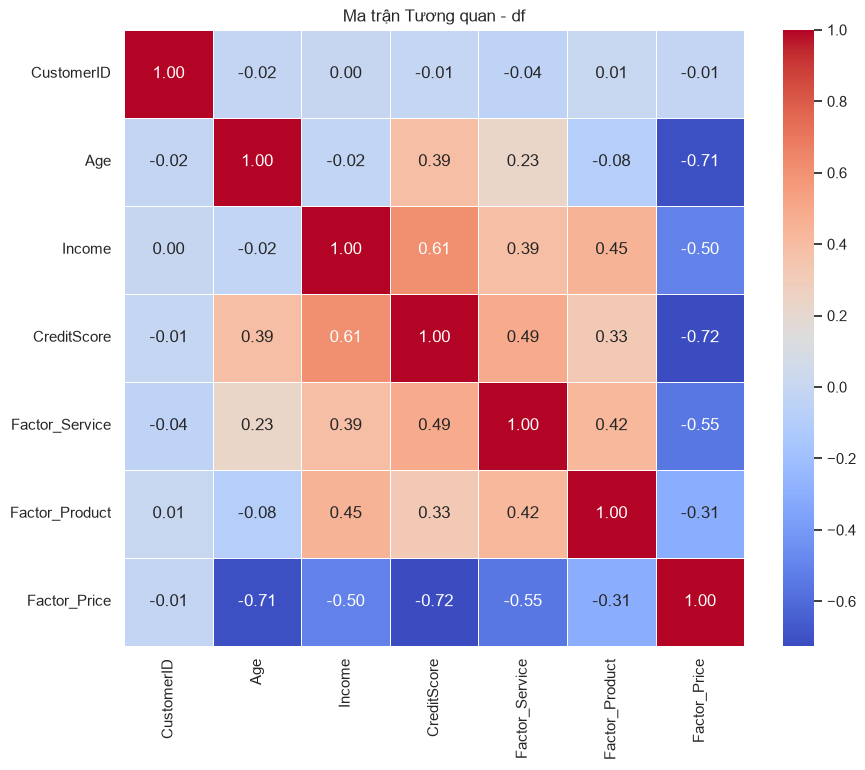
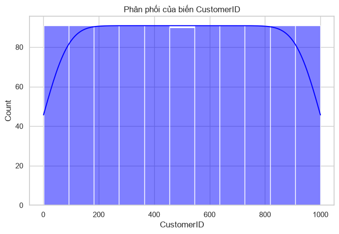
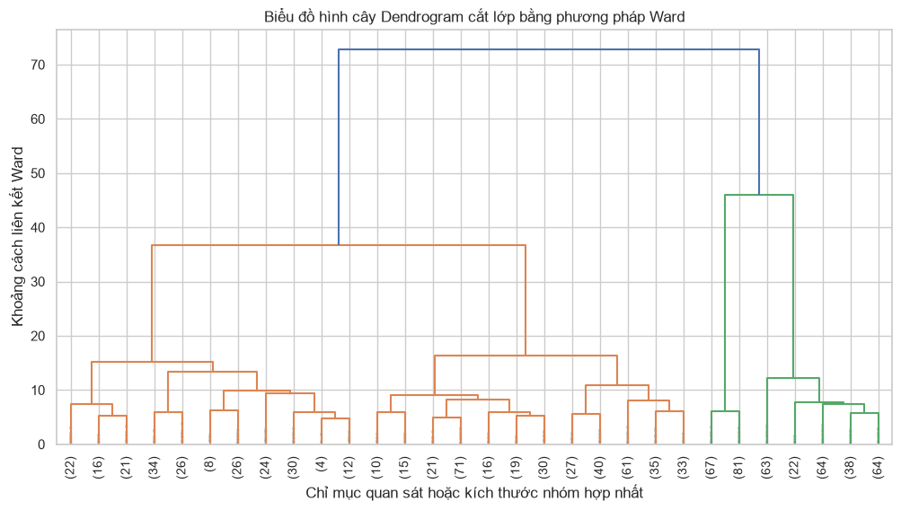
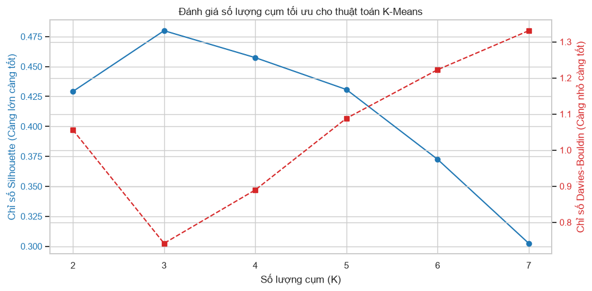
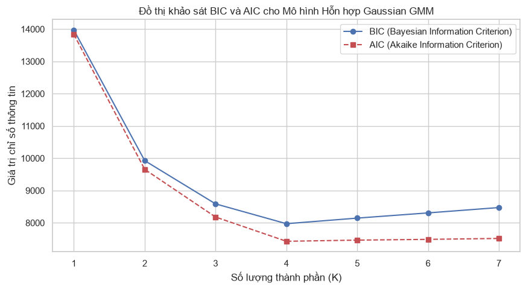
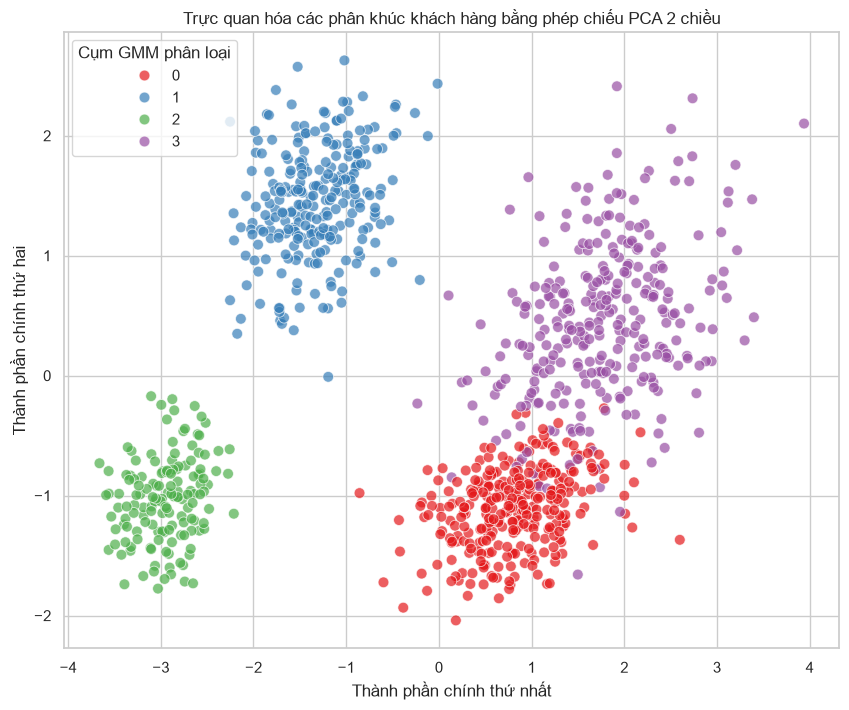

CHƯƠNG 5: Cluster Analysis (CLUSTER ANALYSIS) VÀ KHÁM PHÁ CẤU TRÚC NHÓM#
5.1. Tình huống dẫn dắt: Phân đoạn tập khách hàng ngân hàng#
Trong bối cảnh nền kinh tế số phát triển vượt bậc, hoạt động quản trị quan hệ khách hàng tại các ngân hàng bán lẻ quy mô lớn đang đối mặt với những thách thức chưa từng có. Ban giám đốc tiếp thị của một ngân hàng luôn phải trả lời câu hỏi cốt lõi: Làm thế nào để phân bổ nguồn lực chăm sóc và thiết kế các chiến dịch quảng cáo tối ưu cho hàng vạn khách hàng hoạt động? Một chiến lược tiếp thị đại trà, gửi cùng một thông điệp khuyến mại cho toàn bộ cơ sở dữ liệu khách hàng, đã chứng minh sự thất bại thảm hại với tỷ lệ phản hồi cực kỳ thấp và chi phí vận hành khổng lồ. Khách hàng ngày nay đòi hỏi sự cá nhân hóa sâu sắc trong từng sản phẩm tài chính và dịch vụ chăm sóc. Để làm được điều này, ngân hàng bắt buộc phải thực hiện phân đoạn khách hàng (Customer Segmentation) để phân chia cơ sở dữ liệu khổng lồ thành các nhóm tự nhiên có đặc tính hành vi đồng nhất.
Tuy nhiên, các phương pháp phân đoạn truyền thống thường dựa trên tư duy phân tích đơn biến hoặc phân tích ngưỡng thô sơ. Hãy xem xét một tình huống thực tiễn điển hình tại một ngân hàng bán lẻ đang nỗ lực thiết kế bốn chiến dịch chăm sóc khách hàng chuyên biệt dựa trên hai biến số nhân khẩu học cơ bản là độ tuổi và thu nhập, kết hợp với các điểm nhân tố về mức độ hài lòng dịch vụ được kế thừa từ phân tích ở Chương 4. Phương pháp tiếp cận cổ điển nhất là sử dụng các điểm cắt cố định (thresholds), chẳng hạn như phân loại khách hàng có thu nhập trên một trăm triệu đồng mỗi năm vào nhóm khách hàng ưu tiên, và dưới ngưỡng đó vào nhóm khách hàng phổ thông. Hoặc phân loại theo độ tuổi như nhóm dưới ba mươi tuổi là khách hàng trẻ, và trên ba mươi tuổi là khách hàng trung niên. Nhóm phân tích của ngân hàng nhanh chóng nhận ra rằng cách phân loại này bộc lộ những điểm yếu chí mạng về mặt nhận thức luận và thực tiễn kinh doanh.
Điểm yếu thứ nhất của phương pháp phân đoạn dựa trên ngưỡng đơn biến là sự bỏ sót các mối liên kết đa chiều giữa các biến số. Hãy tưởng tượng hai quan sát cụ thể trong cơ sở dữ liệu: Khách hàng thứ nhất là một kỹ sư công nghệ hai mươi lăm tuổi có mức thu nhập rất cao nhưng số dư tiết kiệm thấp do đang đầu tư mạo hiểm; Khách hàng thứ hai là một sinh viên đại học hai mươi mốt tuổi có thu nhập thấp nhưng nhận được trợ cấp gia đình định kỳ ổn định qua tài khoản ngân hàng. Nếu chỉ nhìn vào độ tuổi, cả hai đều bị xếp chung vào phân khúc khách hàng trẻ tuổi và nhận cùng một gói sản phẩm thẻ tín dụng phổ thông. Đây là một sự giản lược hóa ngây thơ, bỏ qua sự khác biệt khổng lồ về năng lực tài chính và nhu cầu sử dụng dịch vụ giữa hai quan sát này. Tương tự, nếu phân loại dựa trên thu nhập, một người về hưu có thu nhập thấp nhưng sở hữu số dư tiền gửi tiết kiệm tích lũy hàng tỷ đồng sẽ bị đánh đồng với một người trẻ mới đi làm có thu nhập trung bình nhưng không có tài sản tích lũy. Việc áp đặt các ngưỡng cắt cơ học tạo ra những phân khúc nhân tạo, không phản ánh đúng chân dung hành vi thực tế của khách hàng.
Điểm yếu thứ hai là căn bệnh ranh giới cứng (boundary effect). Khi chúng ta thiết lập một ngưỡng thu nhập là một trăm triệu đồng để phân tách phân khúc ưu tiên, một khách hàng có thu nhập chín mươi chín triệu chín trăm nghìn đồng sẽ bị đẩy xuống nhóm phổ thông, trong khi một khách hàng có thu nhập một trăm triệu một trăm nghìn đồng lại được hưởng đặc quyền ưu tiên. Sự chênh lệch chỉ một vài trăm nghìn đồng—vốn có thể chỉ là sai số ngẫu nhiên trong việc kê khai thu nhập—lại dẫn đến hai chế độ chăm sóc khách hàng hoàn toàn khác biệt. Trong thực tế hành vi tiêu dùng, không tồn tại những bước nhảy vọt phi tuyến tính và đột ngột như vậy tại các điểm cắt nhân tạo. Hành vi của con người dịch chuyển một cách liên tục và hữu cơ trong không gian đa chiều, đòi hỏi các phương thức phân đoạn có khả năng nhận diện các biên giới mềm và các vùng chuyển tiếp tự nhiên của dữ liệu.
Hơn thế nữa, khi số lượng biến số tăng lên, việc thiết lập các ngưỡng cắt thủ công trở thành một bài toán bế tắc về mặt hình học. Với hai biến số tuổi và thu nhập, chúng ta có thể chia không gian hai chiều thành bốn ô vuông phân khúc bằng hai đường thẳng vuông góc. Nhưng nếu chúng ta đưa thêm các điểm nhân tố tiềm ẩn trích xuất từ Chương 4 vào phân tích—chẳng hạn như điểm số đánh giá lòng trung thành của khách hàng, điểm số mức độ nhạy cảm về giá cả, hay điểm số tần suất sử dụng ứng dụng di động—không gian phân tích sẽ phình to lên thành không gian năm chiều hoặc mười chiều. Một con người không thể trực quan hóa hay tự tay vẽ ra các siêu phẳng để phân chia không gian đa chiều này một cách hợp lý. Việc cố gắng thiết lập các quy tắc phân loại dựa trên cây quyết định tự chế sẽ tạo ra hàng trăm phân khúc nhỏ lẻ, vụn vặt và mâu thuẫn lẫn nhau, gây bất khả thi cho việc triển khai các chiến dịch tiếp thị trên thực tế.
Để giải quyết triệt để những bế tắc này, chúng ta cần chuyển dịch tư duy từ việc áp đặt cấu trúc chủ quan lên dữ liệu sang việc để dữ liệu tự nói lên cấu trúc nội tại của nó. Trong hệ thống phân loại của Hair et al. (2018), đây chính là sứ mệnh của Interdependence Techniques (Interdependence Techniques) mà đại diện tiêu biểu nhất là Cluster Analysis (Cluster Analysis). Kỹ thuật này hoạt động dựa trên nguyên lý học không giám sát (Unsupervised Learning), nghĩa là hệ thống tự động gom nhóm các quan sát dựa trên mức độ tương đồng đa chiều giữa các biến số mà không cần bất kỳ nhãn phân loại hay quy tắc định sẵn nào từ phía con người. Mỗi khách hàng sẽ được biểu diễn như một vector tọa độ trong không gian đa chiều. Thuật toán phân cụm sẽ tính toán khoảng cách hình học giữa các điểm dữ liệu này, tìm cách gom các điểm nằm gần nhau vào chung một cụm và đẩy các cụm ra xa nhau nhất có thể.
Đặc biệt, sự kết hợp giữa phân tích nhân tố tiềm ẩn từ Chương 4 và phân tích phân cụm ở Chương 5 tạo nên một đường ống xử lý dữ liệu vô cùng mạnh mẽ. Thay vì ném toàn bộ ba mươi câu hỏi khảo sát thô vốn chứa đầy tương quan chéo và nhiễu ngẫu nhiên vào thuật toán gom cụm—một hành động sẽ làm loãng không gian hình học và làm giảm độ chính xác của các cụm—chúng ta sử dụng các điểm nhân tố (Factor Scores) đã được làm sạch sai số ngẫu nhiên. Điểm số từ các nhân tố như Chất lượng dịch vụ, Chất lượng sản phẩm, và Giá trị chi phí đại diện cho các chiều không gian cô đọng, phản ánh chính xác thế giới quan tâm lý học của khách hàng. Khi kết hợp các điểm nhân tố này với dữ liệu hành vi thực tế như số dư tiết kiệm, dư nợ thẻ tín dụng, và độ tuổi, thuật toán phân cụm sẽ hoạt động trên một không gian đặc trưng vô cùng tinh hoa. Sự kết hợp này giúp ngân hàng không chỉ phân nhóm khách hàng theo các chỉ số nhân khẩu học thô ráp, mà là phân nhóm theo sự tương tác sống động giữa năng lực tài chính thực tế và thái độ tâm lý ẩn giấu.
Việc ứng dụng Cluster Analysis vào bài toán phân đoạn khách hàng ngân hàng mang lại ba lợi ích chiến lược vượt trội cho hoạt động kinh doanh. Thứ nhất, nó bảo toàn tính toàn vẹn đa chiều của dữ liệu, cho phép kết hợp đồng thời cả biến nhân khẩu học thô lẫn các Latent Variables tinh hoa phản ánh tâm lý tiêu dùng của khách hàng. Thứ hai, nó khám phá ra các nhóm khách hàng tự nhiên xuất hiện từ dữ liệu thực tế, giúp ban giám đốc tiếp thị nhận diện được những phân khúc khách hàng độc đáo mà họ chưa từng nghĩ tới dựa trên các lý thuyết chủ quan. Thứ ba, nó cung cấp một công cụ định lượng để tối ưu hóa số lượng phân khúc hành vi, đảm bảo mỗi phân khúc đủ lớn để mang lại hiệu quả kinh tế và đủ đồng nhất để thiết kế các thông điệp tiếp thị cá nhân hóa xuất sắc. Bằng việc làm chủ các thuật toán phân cụm phân cấp và phi phân cấp trong chương này, nhà phân tích sẽ xây dựng được một đường ống phân đoạn khách hàng vững chắc, làm tiền đề cho các mô hình dự báo hành vi và tối ưu hóa lợi nhuận ở các chương tiếp theo của cuốn giáo trình.
5.2. Đo lường mức độ tương đồng và Phân cụm Phân cấp (Hierarchical Clustering)#
5.2.1. Đo lường mức độ tương đồng và khoảng cách trong không gian đa chiều#
Trái tim của toàn bộ kỹ thuật Cluster Analysis (Cluster Analysis) nằm ở một khái niệm toán học và nhận thức luận vô cùng đơn giản nhưng đầy quyền năng: khoảng cách (distance). Để có thể gom các quan sát vào cùng một phân khúc và phân tách các phân khúc ra xa nhau, chúng ta bắt buộc phải có một phương thức định lượng xem hai quan sát cụ thể có mức độ tương đồng (similarity) hay tương dị (dissimilarity) là bao nhiêu. Trong hình học đa chiều, mức độ tương dị giữa hai điểm dữ liệu được biểu diễn một cách tự nhiên thông qua khoảng cách hình học giữa chúng. Khoảng cách càng nhỏ, hai khách hàng càng có hành vi tương tự nhau, và ngược lại. Như Johnson & Wichern (2007) đã chỉ rõ trong chương mười hai, sự lựa chọn công thức tính khoảng cách không chỉ đơn thuần là sự lựa chọn thuật toán, mà là quyết định mang tính phương pháp luận quyết định trực tiếp đến hình dáng và ý nghĩa của các phân cụm được sinh ra.
Khoảng cách phổ biến nhất và trực quan nhất đối với trực giác con người là Khoảng cách Euclidean (Euclidean distance). Xét hai quan sát \(p\)-chiều ký hiệu là \(\mathbf{x} = (x_1, x_2, \ldots, x_p)^T\) và \(\mathbf{y} = (y_1, y_2, \ldots, y_p)^T\). Khoảng cách Euclidean giữa hai điểm này được định nghĩa là độ dài của đoạn thẳng nối liền chúng trong không gian Euclid:
Mặc dù có vẻ đẹp hình học thuần khiết, khoảng cách Euclidean lại bộc lộ những điểm yếu chí mạng khi đối mặt với dữ liệu thực tế. Điểm yếu thứ nhất là sự nhạy cảm tuyệt đối với đơn vị đo lường và thang đo (scale sensitivity). Hãy xem xét tình huống chúng ta đo lường hai biến số của khách hàng: tuổi (dao động từ hai mươi đến sáu mươi tuổi) và thu nhập hàng năm (dao động từ hàng chục triệu đến hàng tỷ đồng). Vì biên độ dao động của thu nhập lớn hơn tuổi hàng triệu lần, các hiệu số bình phương của thu nhập sẽ hoàn toàn lấn át và triệt tiêu đóng góp của biến tuổi vào công thức khoảng cách. Khoảng cách Euclidean lúc này thực chất chỉ đo lường sự khác biệt về thu nhập, biến tuổi thành một biến số vô hình. Để khắc phục, chúng ta bắt buộc phải chuẩn hóa dữ liệu trước khi phân tích. Điểm yếu thứ hai, nguy hiểm hơn, là Euclidean hoàn toàn phớt lờ mối tương quan giữa các biến số. Nếu hai biến số tương quan rất mạnh với nhau (ví dụ: tổng chi tiêu và thu nhập), khoảng cách Euclidean sẽ vô tình nhân đôi đóng góp của chiều thông tin này, gây ra sự chệch hướng nghiêm trọng cho thuật toán phân cụm.
Để giảm bớt sự nhạy cảm với các giá trị Outliers cực đoan (outliers)—những giá trị có thể làm bùng nổ khoảng cách Euclidean do phép bình phương—chúng ta có thể sử dụng Khoảng cách Manhattan (Manhattan distance) hay còn gọi là khoảng cách hình học taxi. Công thức tính khoảng cách Manhattan được định nghĩa bằng tổng độ lệch tuyệt đối giữa các chiều tọa độ:
Ý nghĩa hình học của Manhattan là quãng đường chúng ta phải di chuyển dọc theo các trục tọa độ vuông góc để đi từ điểm này đến điểm kia, giống như một chiếc xe taxi di chuyển qua các khối nhà vuông vức trong thành phố New York. Vì không sử dụng phép bình phương, khoảng cách Manhattan không khuếch đại các khoảng lệch lớn ở các chiều đơn lẻ, giúp thuật toán phân cụm hoạt động bền vững (robust) hơn khi dữ liệu chứa các quan sát nhiễu hoặc các phân phối có đuôi dày. Tuy nhiên, tương tự như Euclidean, Manhattan vẫn bất lực trong việc xử lý mối tương quan chéo giữa các biến số độc lập.
Vũ khí tối thượng để giải quyết triệt để cả hai căn bệnh scale và tương quan chính là Khoảng cách Mahalanobis (Mahalanobis distance). Công thức toán học của khoảng cách Mahalanobis giữa hai véc-tơ quan sát được định nghĩa như sau:
Trong đó, \(\mathbf{S}\) là ma trận hiệp phương sai của tập dữ liệu và \(\mathbf{S}^{-1}\) là ma trận nghịch đảo của nó. Sự xuất hiện của ma trận \(\mathbf{S}^{-1}\) đóng vai trò là một phép biến đổi tuyến tính mạnh mẽ, thực hiện đồng thời hai nhiệm vụ: chuẩn hóa tỷ lệ biến thiên của từng chiều dữ liệu (bằng cách chia cho phương sai trên đường chéo chính) và khử tương quan chéo giữa các cặp biến số (thông qua các phần tử ngoài đường chéo). Khoảng cách Mahalanobis co giãn không gian đa chiều dựa trên mật độ phân tán của dữ liệu gốc. Nếu dữ liệu phân tán mạnh dọc theo một hướng cụ thể, khoảng cách hình học theo hướng đó sẽ bị co rút lại. Đây là phép đo khoảng cách khoa học và toàn diện nhất trong bối cảnh dữ liệu kinh tế tài chính phức tạp, giúp các phân cụm được trích xuất phản ánh đúng các cấu trúc hành vi độc lập thực sự của khách hàng.
5.2.2. Phân cụm Phân cấp từ dưới lên và Tiêu chuẩn Liên kết#
Khi đã thiết lập được ma trận khoảng cách giữa tất cả các cặp quan sát trong tập dữ liệu, chúng ta tiến hành áp dụng thuật toán Phân cụm Phân cấp (Hierarchical Clustering) để xây dựng cấu trúc nhóm. Phân cụm phân cấp được chia thành hai hướng tiếp cận ngược nhau: Gom cụm từ dưới lên (Agglomerative) và Phân rã từ trên xuống (Divisive). Trong giáo trình này, chúng ta tập trung sâu sắc vào phương pháp gom cụm từ dưới lên Agglomerative, vốn là tiêu chuẩn thực nghiệm phổ biến và hiệu quả nhất. Thuật toán Agglomerative xuất phát từ trạng thái cực đoan ban đầu nơi mỗi quan sát đơn lẻ được coi là một cụm độc lập (tổng cộng có \(n\) cụm). Ở mỗi bước lặp, thuật toán sẽ tìm kiếm cặp cụm có khoảng cách gần nhau nhất để tiến hành sáp nhập chúng lại thành một cụm lớn hơn. Quy trình này lặp đi lặp lại liên tục cho đến khi toàn bộ \(n\) quan sát ban đầu được gom về một cụm duy nhất chứa toàn bộ dữ liệu.
Thử thách kỹ thuật lớn nhất của thuật toán này là làm thế nào để định nghĩa khoảng cách giữa hai cụm đã được sáp nhập, thay vì khoảng cách giữa hai điểm đơn lẻ. Để giải quyết, khoa học thống kê đề xuất các tiêu chuẩn liên kết (Linkage criteria) khác nhau, đại diện cho các triết lý gom cụm riêng biệt. Tiêu chuẩn thứ nhất là Liên kết đơn (Single Linkage) hay còn gọi là liên kết láng giềng gần nhất. Khoảng cách giữa cụm \(A\) và cụm \(B\) được tính bằng khoảng cách nhỏ nhất giữa một phần tử thuộc \(A\) và một phần tử thuộc \(B\):
Liên kết đơn có ưu điểm là dễ tính toán và có thể nhận diện được các cụm có hình dạng uốn lượn phi tuyến tính. Tuy nhiên, nó mắc phải một khuyết tật chí mạng gọi là hiện tượng dây chuyền (chaining effect). Chỉ cần xuất hiện một vài điểm dữ liệu nhiễu nằm rải rác làm cầu nối giữa hai cụm lớn độc lập, liên kết đơn sẽ ngay lập tức sáp nhập hai cụm này lại với nhau qua chuỗi cầu nối đó, tạo ra một cụm khổng lồ hình sợi không mang ý nghĩa thực tiễn kinh doanh.
Tiêu chuẩn thứ hai là Liên kết đầy đủ (Complete Linkage) hay liên kết láng giềng xa nhất, tiếp cận theo triết lý ngược lại. Khoảng cách giữa hai cụm là khoảng cách lớn nhất giữa các phần tử của chúng:
Liên kết đầy đủ loại bỏ hoàn toàn hiện tượng dây chuyền của liên kết đơn và có xu hướng tạo ra các cụm hình cầu cực kỳ chặt chẽ, đồng đều về mặt kích thước. Tuy nhiên, nó cực kỳ nhạy cảm với các điểm Outliers. Chỉ cần một điểm dữ liệu nằm hơi lệch ra ngoài rìa của cụm cũng có thể làm tăng vọt khoảng cách liên kết, khiến cho thuật toán từ chối sáp nhập các cụm thực sự đồng nhất.
Tiêu chuẩn thứ ba là Liên kết trung bình (Average Linkage - UPGMA), đại diện cho một giải pháp dung hòa khoa học. Khoảng cách giữa hai cụm được định nghĩa là trung bình cộng của tất cả các khoảng cách giữa các cặp phần tử chéo nhau:
Trong đó, \(n_A\) và \(n_B\) lần lượt là số lượng phần tử trong cụm \(A\) và cụm \(B\). Liên kết trung bình sử dụng toàn bộ thông tin cấu trúc của các cụm để đưa ra quyết định sáp nhập, tạo ra sự cân biến tuyệt vời giữa tính chặt chẽ của cụm và tính bền vững trước nhiễu ngẫu nhiên.
Để minh họa cụ thể cho quy trình hoạt động của các tiêu chuẩn liên kết này, chúng ta hãy cùng thực hiện một ví dụ tính toán số học chi tiết từng bước trên một tập dữ liệu giả định gồm năm khách hàng được đo lường dựa trên hai đặc tính là số năm gắn bó và số dư tài khoản trung bình (đã được chuẩn hóa). Giả sử ma trận khoảng cách ban đầu giữa năm quan sát ký hiệu là một bảng vuông đối xứng kích thước năm nhân năm. Tại bước một, thuật toán tiến hành quét ma trận khoảng cách để tìm cặp điểm có khoảng cách nhỏ nhất. Giả sử điểm số một và điểm số hai có khoảng cách nhỏ nhất là 0.15. Thuật toán sẽ ngay lập tức tiến hành sáp nhập hai điểm này thành cụm mới ký hiệu là cụm một hai. Tại bước hai, chúng ta bắt buộc phải tính toán lại khoảng cách từ cụm một hai mới được tạo lập đến ba điểm còn lại (điểm ba, điểm bốn, và điểm năm).
Nếu chúng ta áp dụng tiêu chuẩn liên kết đơn (Single Linkage), khoảng cách từ cụm một hai đến điểm ba sẽ là giá trị nhỏ nhất giữa khoảng cách từ điểm một đến điểm ba và khoảng cách từ điểm hai đến điểm ba. Giả sử các khoảng cách này lần lượt là 0.45 và 0.38, khi đó khoảng cách mới sẽ được chọn là 0.38. Quá trình này tiếp tục diễn ra cho tất cả các điểm còn lại, tạo ra một ma trận khoảng cách thu gọn kích thước bốn nhân bốn. Thuật toán lại tiếp tục quét ma trận mới này để tìm khoảng cách nhỏ nhất tiếp theo để sáp nhập, lặp đi lặp lại cho đến khi tất cả năm quan sát quy tụ về một cụm duy nhất.
Ngược lại, nếu chúng ta áp dụng tiêu chuẩn liên kết đầy đủ (Complete Linkage), khoảng cách từ cụm một hai đến điểm ba sẽ là giá trị lớn nhất giữa hai khoảng cách trên, tức là chọn giá trị 0.45 thay vì 0.38. Sự khác biệt tinh tế này ở từng bước lặp sẽ dẫn đến các quyết định sáp nhập hoàn toàn khác nhau ở các giai đoạn sau, chứng minh rằng tiêu chuẩn liên kết là yếu tố quyết định hình dạng hình học của các phân cụm cuối cùng.
5.2.3. Phương pháp cực tiểu hóa phương sai Ward’s method và Biểu đồ Dendrogram#
Bên cạnh ba tiêu chuẩn liên kết dựa trên khoảng cách hình học trực tiếp nêu trên, Phương pháp Ward (Ward’s minimum variance method) trỗi dậy như một kiệt tác toán học và là lựa chọn hàng đầu cho bài toán phân đoạn khách hàng doanh nghiệp. Thay vì đo đạc khoảng cách giữa các rìa cụm, Ward tiếp cận theo hướng phân tích phương sai. Triết lý của phương pháp Ward là tại mỗi bước lặp, phép sáp nhập hai cụm phải làm giảm thiểu tối đa sự gia tăng của tổng bình phương sai số trong nội bộ các cụm (Error Sum of Squares - ESS). Để chính thức hóa, chúng ta xét một cụm \(C_k\) có trọng tâm (centroid) là véc-tơ trung bình \(\mathbf{m}_k\). Trị số ESS của cụm \(C_k\) được tính bằng tổng bình phương khoảng cách Euclidean từ mỗi điểm dữ liệu trong cụm đến trọng tâm của nó:
Khi toàn bộ dữ liệu được chia thành \(K\) cụm, tổng bình phương sai số của toàn bộ mô hình là tổng ESS của tất cả các cụm độc lập: \(ESS = \sum_{k=1}^K ESS_k\). Khi sáp nhập hai cụm \(A\) và \(B\) thành một cụm mới, trị số ESS tổng thể chắc chắn sẽ gia tăng vì trọng tâm mới sẽ không còn trùng khớp với các trọng tâm riêng biệt trước đó. Sự gia tăng ESS do phép sáp nhập này được tính bằng công thức toán học sau:
Trong công thức này, \(\mathbf{m}_A\) and \(\mathbf{m}_B\) lần lượt là véc-tơ trọng tâm của cụm \(A\) và cụm \(B\), còn \(n_A\) và \(n_B\) là cỡ mẫu của chúng. Thuật toán Ward sẽ quét qua tất cả các cặp cụm khả dĩ và chọn sáp nhập cặp cụm nào có giá trị \(\Delta ESS_{AB}\) đạt cực tiểu. Việc này đảm bảo rằng các cụm mới được hình thành luôn có độ nhất quán nội tại rất cao, giảm thiểu tối đa sự phân tán thông tin. Phương pháp Ward có xu hướng tạo ra các phân cụm có kích thước đồng đều và cấu trúc hình học hình cầu rất đẹp mắt, cực kỳ phù hợp cho việc ứng dụng thực tế tiếp thị nơi các nhà quản trị cần các phân khúc có quy mô đủ lớn và đặc tính hành vi tập trung rõ rệt.
Kết quả của toàn bộ quy trình gom cụm phân cấp được trực quan hóa thông qua biểu đồ hình cây Dendrogram. Dendrogram là một sơ đồ hai chiều, trong đó trục hoành đại diện cho các quan sát đơn lẻ (hoặc các cụm), và trục tung đại diện cho khoảng cách liên kết (hoặc trị số \(\Delta ESS\)) tại thời điểm phép sáp nhập diễn ra. Mỗi phép sáp nhập được biểu diễn bằng một đường chữ U ngược kết nối hai cụm. Độ cao của đường chữ U ngược này tỷ lệ thuận với khoảng cách giữa hai cụm đó. Việc đọc biểu đồ Dendrogram để xác định số lượng cụm tối ưu đòi hỏi tư duy phân tích hình học sắc bén. Chúng ta tìm kiếm một đường cắt ngang (cut-off line) đi qua các nhánh cây thẳng đứng dài nhất mà không giao cắt với các phép sáp nhập nằm ngang. Một nhánh thẳng đứng dài biểu thị rằng thuật toán đã phải đi một khoảng cách rất lớn mới tìm thấy cụm tiếp theo để sáp nhập, báo hiệu rằng ranh giới tự nhiên giữa các phân khúc đã được xác lập vững chắc.
Để kiểm định độ tin cậy và tính chân thực của biểu đồ Dendrogram so với dữ liệu gốc, chúng ta sử dụng hệ số tương quan cophenetic (cophenetic correlation coefficient). Hệ số này đo lường mức độ tương quan tuyến tính giữa ma trận khoảng cách cophenetic (khoảng cách liên kết trên Dendrogram nơi hai quan sát lần đầu tiên được gom vào cùng một cụm) và ma trận khoảng cách thực tế ban đầu giữa các quan sát. Một hệ số tương quan cophenetic gần sát mức 1.0 (tiêu chuẩn thực nghiệm thường yêu cầu \(\ge 0.75\)) chứng minh rằng Dendrogram đã bảo toàn hoàn hảo cấu trúc hình học của không gian đa chiều gốc, khẳng định độ tin cậy khoa học của kết quả phân cụm trước khi đưa vào ứng dụng thực tiễn.
5.2.4. Độ phức tạp tính toán và Hạn chế của Phân cụm Phân cấp#
Trước khi quyết định áp dụng phân cụm phân cấp vào cơ sở dữ liệu thực tế của doanh nghiệp, nhà phân tích cần thấu hiểu sâu sắc về mặt giới hạn điện toán và độ phức tạp thuật toán (computational complexity). Phân cụm phân cấp là một thuật toán có chi phí tính toán cực kỳ đắt đỏ. Để khởi động thuật toán, bước đầu tiên là chúng ta phải tính toán ma trận khoảng cách giữa tất cả các cặp điểm dữ liệu. Nếu tập dữ liệu có \(n\) quan sát, ma trận khoảng cách sẽ có kích thước \(n \times n\), tương đương với độ phức tạp không gian (space complexity) là \(O(n^2)\). Đối với một cơ sở dữ liệu khách hàng trung bình khoảng năm mươi ngàn quan sát, ma trận khoảng cách này sẽ chiếm đoạt hàng chục gigabyte bộ nhớ RAM của máy tính, dễ dàng gây ra lỗi tràn bộ nhớ (out-of-memory).
Về mặt thời gian xử lý, quy trình quét ma trận khoảng cách và cập nhật lại khoảng cách sau mỗi bước sáp nhập lặp đi lặp lại khiến cho độ phức tạp thời gian (time complexity) đạt mức \(O(n^3)\) trong các cài đặt cơ bản, hoặc tối ưu nhất là \(O(n^2 \log n)\) khi sử dụng các cấu trúc dữ liệu hàng đợi ưu tiên (priority queues) tiên tiến. Điều này có nghĩa là khi kích thước mẫu \(n\) tăng lên gấp đôi, thời gian tính toán của hệ thống sẽ tăng lên gấp tám lần. Do đó, phân cụm phân cấp hoàn toàn bất khả thi đối với các tập dữ liệu lớn của kỷ nguyên Big Data nơi quy mô dữ liệu lên tới hàng triệu quan sát.
Bên cạnh đó, phân cụm phân cấp còn bộc lộ điểm yếu lớn trước sự hiện diện của các điểm dữ liệu Outliers (outliers) và nhiễu ngẫu nhiên. Một điểm Outliers nằm đơn độc có thể dễ dàng tạo thành một nhánh độc lập trên Dendrogram và kiên quyết từ chối sáp nhập với bất kỳ cụm nào cho đến tận bước cuối cùng. Điều này làm biến dạng cấu trúc của cây Dendrogram, che lấp đi các ranh giới tự nhiên của các phân khúc khách hàng lành mạnh. Để bảo vệ mô hình khỏi tác động tiêu cực này, nhà phân tích bắt buộc phải thực hiện các bước lọc sạch dữ liệu như đã thảo luận ở Chương 2, sử dụng khoảng cách Mahalanobis đa chiều để nhận diện và loại bỏ các điểm Outliers trước khi chạy thuật toán.
Đồng thời, để định lượng sức mạnh cấu trúc phân cấp được tạo ra từ dữ liệu, giới thống kê đề xuất chỉ số Hệ số phân cấp (Agglomerative Coefficient - AC). Chỉ số AC đo lường mức độ rõ rệt của cấu trúc phân cụm được tìm thấy bởi thuật toán, nhận giá trị từ 0 đến 1. Một chỉ số AC tiệm cận mức 1.0 báo hiệu rằng thuật toán đã tìm thấy một cấu trúc phân cấp vô cùng sắc nét và rõ ràng trong dữ liệu, trong khi chỉ số AC thấp cảnh báo rằng các quan sát phân tán đều đặn và không có xu hướng tụ hội tự nhiên. Việc thấu hiểu chỉ số AC giúp nhà phân tích đánh giá được tính khả thi của mô hình trước khi tiến hành phân cụm trên diện rộng.
Sự bất lực về mặt điện toán đối với mẫu lớn dẫn đến một giải pháp phối hợp thực tế trong các dự án khoa học dữ liệu lớn: chúng ta rút một mẫu ngẫu nhiên nhỏ đại diện (khoảng vài ngàn quan sát) để chạy phân cụm phân cấp và vẽ biểu đồ Dendrogram nhằm thám hiểm cấu trúc nhóm tự nhiên và xác định số lượng cụm tối ưu \(K\). Sau khi đã làm rõ được số cụm tối ưu bằng Dendrogram, chúng ta mới áp dụng các thuật toán phân cụm phi phân cấp như K-Means—vốn có độ phức tạp thời gian tuyến tính \(O(n)\)—trên toàn bộ cơ sở dữ liệu khổng lồ. Sự phối hợp nhịp nhàng này vừa bảo toàn được tính khám phá trực quan của phân cụm phân cấp, vừa tận dụng được năng lực điện toán mạnh mẽ của phân cụm phi phân cấp, tạo ra một đường ống phân tích đa biến vô cùng linh hoạt và hiệu quả.
5.3. Phân cụm Phi phân cấp và Mô hình dựa trên Xác suất (Model-based Clustering)#
5.3.1. K-Means và hạn chế của nó#
Trong vũ trụ của phân cụm phi phân cấp, K-Means trỗi dậy như một người khổng lồ được sử dụng rộng rãi nhất nhờ sự đơn giản, trực quan và hiệu năng tính toán xuất sắc. Khác với thuật toán phân cấp tích lũy vốn không yêu cầu xác định trước số cụm, K-Means bắt đầu bằng việc yêu cầu nhà nghiên cứu phải thiết lập một giả thuyết cứng về số lượng cụm ký hiệu là \(K\). Mục tiêu tối thượng của K-Means là phân chia \(n\) quan sát đa chiều vào \(K\) cụm khác nhau sao cho tổng bình phương khoảng cách từ mỗi điểm dữ liệu đến trọng tâm cụm tương ứng của nó đạt giá trị nhỏ nhất. Để biểu diễn toán học cho mục tiêu này, chúng ta định nghĩa hàm mục tiêu của K-Means—thường gọi là tổng biến thiên nội bộ (Within-Cluster Sum of Squares - WCSS) hay hàm tổn thất bình phương:
Trong đó, \(C_k\) đại diện cho cụm thứ \(k\), \(\mathbf{x}_i\) là vector quan sát thứ \(i\), và \(\boldsymbol{\mu}_k\) là vector trọng tâm (centroid) đại diện cho cụm \(C_k\). Ký hiệu \(\|\cdot\|^2\) biểu thị bình phương chuẩn L2 (khoảng cách Euclidean bình phương) trong không gian đa chiều. Thuật toán K-Means thực hiện một quy trình tối ưu hóa lặp vô cùng đẹp mắt, bao gồm hai giai đoạn luân phiên: giai đoạn gán (Assignment step) và giai đoạn cập nhật (Update step).
Ở bước khởi tạo, thuật toán lựa chọn ngẫu nhiên \(K\) điểm trong không gian dữ liệu để làm các trọng tâm ban đầu. Ở giai đoạn gán, đối với mỗi quan sát \(\mathbf{x}_i\), thuật toán tiến hành tính toán khoảng cách Euclidean đến tất cả \(K\) trọng tâm và gán quan sát đó vào cụm có trọng tâm gần nó nhất. Về mặt toán học, điều này tương đương với việc giảm thiểu hàm mục tiêu \(J\) theo cấu phần phân nhóm bằng cách cố định vị trí của các trọng tâm \(\boldsymbol{\mu}_k\). Ở giai đoạn cập nhật, sau khi tất cả các điểm dữ liệu đã được gán vào các cụm tương ứng, thuật toán tiến hành tính toán lại vị trí của các trọng tâm bằng cách lấy trung bình cộng tọa độ của tất cả các điểm dữ liệu thuộc về cụm đó:
Trong đó, \(|C_k|\) là số lượng quan sát trong cụm \(C_k\). Việc tính toán lại trọng tâm này tương đương với việc cực tiểu hóa hàm mục tiêu \(J\) theo biến số trọng tâm \(\boldsymbol{\mu}_k\) khi cấu phần phân nhóm được giữ nguyên. Thuật toán luân phiên thực hiện hai giai đoạn này liên tục. Do hàm mục tiêu \(J\) là một hàm đơn điệu giảm và số lượng phương án phân chia cụm là hữu hạn, thuật toán K-Means được bảo đảm chắc chắn sẽ hội tụ về một điểm cực trị sau một số hữu hạn bước lặp.
Mặc dù có vẻ ngoài hoàn hảo, K-Means lại chứa đựng những giới hạn lý thuyết vô cùng nghiêm trọng. Giới hạn thứ nhất là giả định ngầm định về hình dạng của các cụm dữ liệu. Do sử dụng khoảng cách Euclidean trực tiếp làm thước đo tổn thất, K-Means ngầm định giả định rằng tất cả các cụm đều có hình dạng hình cầu (spherical) và có kích thước (phương sai) đồng đều trong không gian đa chiều. Khi dữ liệu thực tế phân bố dưới các dạng hình học phức tạp hơn—chẳng hạn như hai đường cong lồng nhau dạng hình bán nguyệt hoặc các cụm hình elip thuôn dài có phương sai lệch nhau lớn—thuật toán K-Means sẽ sụp đổ hoàn toàn. Nó sẽ tàn nhẫn cắt đôi các hình elip này để tạo ra các cụm hình cầu nhân tạo, dẫn đến sự sai lệch nghiêm trọng so với thực tế sinh dữ liệu.
Giới hạn thứ hai là sự nhạy cảm tuyệt đối với phương án khởi tạo trọng tâm ban đầu (initialization sensitivity). Do hàm mục tiêu \(J\) là một hàm không lồi (non-convex), quy trình lặp của K-Means cực kỳ dễ bị mắc kẹt vào các cực trị địa phương (local minima) thay vì tìm thấy lời giải tối ưu toàn cục. Nếu các trọng tâm ban đầu vô tình được chọn nằm quá gần nhau hoặc nằm trong các vùng nhiễu, kết quả phân cụm cuối cùng sẽ rất kém và không ổn định qua các lần chạy khác nhau.
Để giải quyết triệt để vấn đề khởi tạo ngẫu nhiên này, giới khoa học đã phát minh ra thuật toán K-Means++ với một quy trình chọn trọng tâm ban đầu vô cùng thông minh. Trọng tâm đầu tiên được chọn ngẫu nhiên hoàn toàn từ tập dữ liệu. Đối với mỗi điểm dữ liệu tiếp theo \(\mathbf{x}_i\), chúng ta tính toán khoảng cách ngắn nhất từ nó đến các trọng tâm đã được chọn trước đó, ký hiệu là \(D(\mathbf{x}_i)\). Trọng tâm tiếp theo sẽ được chọn ngẫu nhiên từ tập dữ liệu với xác suất \(P(\mathbf{x}_i)\) tỷ lệ thuận với bình phương khoảng cách này:
Quy trình này lặp lại cho đến khi đủ số lượng \(K\) trọng tâm khởi tạo. Cơ chế toán học này đảm bảo rằng các trọng tâm tiếp theo luôn có xu hướng được đặt ở các vùng không gian loãng dữ liệu hoặc cách xa các trọng tâm hiện tại, ngăn ngừa hiện tượng tập trung quá nhiều trọng tâm vào cùng một cụm mật độ cao. Thuật toán K-Means++ đảm bảo về mặt toán học rằng sai số của kết quả phân cụm cuối cùng sẽ nằm trong một giới hạn trên có tỷ lệ xấp xỉ so với kết quả tối ưu toàn cục, nâng cao đáng kể tính ổn định và độ tin cậy của mô hình.
Giới hạn thứ ba là sự nhạy cảm với các quan sát Outliers (outliers). Vì WCSS sử dụng bình phương khoảng cách Euclidean, một điểm Outliers nằm cực xa trọng tâm sẽ đóng góp một lượng tổn thất khổng lồ vào hàm mục tiêu. Để giảm thiểu tổn thất này, thuật toán K-Means sẽ buộc phải dịch chuyển trọng tâm của cụm về phía điểm Outliers đó, làm chệch hướng ranh giới phân loại của hàng ngàn quan sát lành mạnh còn lại. Để đối phó với điều này, thuật toán K-Medoids (cụ thể là thuật toán PAM - Partitioning Around Medoids) trỗi dậy như một giải pháp thay thế bền vững. K-Medoids ép buộc các tâm cụm phải là các điểm dữ liệu thực tế tồn tại trong tập dữ liệu (gọi là các medoids) thay vì lấy trung bình cộng tọa độ (centroids). Việc này giúp K-Medoids triệt tiêu sự nhạy cảm với các giá trị cực đoan, đồng thời cho phép sử dụng bất kỳ phép đo khoảng cách tùy ý nào thay vì chỉ bó buộc trong khoảng cách Euclidean.
Giới hạn thứ tư, mang tính triết lý nhận thức luận sâu sắc nhất, chính là cơ chế phân cụm cứng (hard clustering). K-Means ép buộc mọi điểm dữ liệu bắt buộc phải thuộc về một cụm duy nhất với mức độ chắc chắn tuyệt đối là một trăm phần trăm, và có xác suất bằng không đối với các cụm còn lại. Hãy tưởng tượng một khách hàng nằm ngay trên ranh giới phân tách giữa cụm giới trẻ tiêu dùng và cụm gia đình tiết kiệm. Việc gán cứng khách hàng này vào một cụm duy nhất và phớt lờ hoàn toàn thuộc tính lai của họ sẽ tước bỏ khả năng quản trị rủi ro mềm của doanh nghiệp, bỏ qua sự không chắc chắn (uncertainty) vốn luôn tồn tại trong các hành vi xã hội.
5.3.2. Gaussian Mixture Models (GMM) và Thuật toán Expectation-Maximization#
Để giải phóng Cluster Analysis khỏi những ràng buộc hình học chật hẹp và triết lý phân cụm cứng của K-Means, giới thống kê đa biến đã phát triển hướng tiếp cận dựa trên mô hình xác suất (Model-based Clustering), tiêu biểu là Mô hình Hỗn hợp Gaussian (Gaussian Mixture Models - GMM). Thay vì nhìn nhận các cụm như các khối elip cứng được xác định bởi khoảng cách hình học, GMM tiếp cận dưới lăng kính của Data Generating Process - DGP (DGP). GMM giả định rằng toàn bộ dữ liệu quan sát được sinh ra từ một hỗn hợp gồm \(K\) phân phối chuẩn nhiều chiều (Multivariate Normal Distributions) độc lập đại diện cho \(K\) cụm ẩn. Hàm mật độ xác suất hỗn hợp của một quan sát \(\mathbf{x}\) được biểu diễn bằng tổng có trọng số của các phân phối thành phần:
Trong phương trình toán học này, \(\pi_k\) là hệ số trộn (mixing coefficient) đại diện cho tỷ lệ hoặc xác suất tiên nghiệm (prior probability) mà một quan sát ngẫu nhiên được sinh ra từ cụm thứ \(k\). Các hệ số trộn bắt buộc phải thỏa mãn hai ràng buộc xác suất căn bản là không âm và có tổng bằng đúng một: \(\pi_k \ge 0\) và \(\sum_{k=1}^K \pi_k = 1\). Thành phần \(\mathcal{N}(\mathbf{x} | \boldsymbol{\mu}_k, \boldsymbol{\Sigma}_k)\) là hàm mật độ xác suất của phân phối chuẩn đa biến \(p\)-chiều ứng với cụm thứ \(k\), được định nghĩa chi tiết bằng công thức ma trận sau:
Trong đó, \(\boldsymbol{\mu}_k\) là vector kỳ vọng đại diện cho tọa độ trung tâm của cụm thứ \(k\), và \(\boldsymbol{\Sigma}_k\) là ma trận hiệp phương sai quyết định kích thước, hình dáng hình học và hướng xoay của cụm đó trong không gian \(p\)-chiều. Định thức \(|\boldsymbol{\Sigma}_k|\) phản ánh thể tích của cụm, trong khi ma trận nghịch đảo \(\boldsymbol{\Sigma}_k^{-1}\) điều phối sự co giãn hình học dựa trên tương quan giữa các biến.
Quyền năng vượt trội của GMM so với K-Means nằm ở sự linh hoạt của ma trận hiệp phương sai \(\boldsymbol{\Sigma}_k\). Chúng ta có thể cấu hình ma trận này dưới các dạng ràng buộc cấu trúc khác nhau để kiểm soát số lượng tham số ước lượng và phòng ngừa overfitting. Cấu hình thứ nhất là ma trận hiệp phương sai hình cầu (spherical covariance), trong đó \(\boldsymbol{\Sigma}_k = \sigma_k^2 \mathbf{I}\) với \(\mathbf{I}\) là ma trận đơn vị. Ràng buộc này ép các cụm phải có hình dạng tròn trịa đồng đều, tương đương với giả định của K-Means nhưng linh hoạt hơn khi cho phép mỗi cụm có một phương sai khác nhau. Tổng số tham số cần ước lượng cho ma trận hiệp phương sai lúc này giảm xuống chỉ còn \(K\) tham số. Cấu hình thứ hai là ma trận hiệp phương sai đường chéo (diagonal covariance), trong đó \(\boldsymbol{\Sigma}_k\) là một ma trận đường chéo chứa các phương sai khác nhau trên các trục tọa độ. Ràng buộc này cho phép các cụm có hình dạng elip nhưng các trục chính bắt buộc phải song song với các trục tọa độ gốc (tương đương giả định các đặc trưng độc lập có điều kiện). Tổng số tham số cần ước lượng cho hiệp phương sai là \(K \times p\).
Cấu hình thứ ba là ma trận hiệp phương sai đồng dạng (tied covariance), trong đó toàn bộ \(K\) cụm dùng chung một ma trận hiệp phương sai duy nhất: \(\boldsymbol{\Sigma}_k = \boldsymbol{\Sigma}\) cho mọi \(k\). Ràng buộc này bắt ép tất cả các cụm phải có hình dáng hình học và hướng xoay hoàn toàn giống hệt nhau, giúp tiết kiệm tối đa số lượng tham số ước lượng (chỉ cần ước lượng duy nhất một ma trận đầy đủ kích thước \(p \times p\), tương đương \(p(p+1)/2\) tham số). Cấu hình thứ tư, tự do và mạnh mẽ nhất, là ma trận hiệp phương sai đầy đủ (full covariance). Ở cấu hình này, mỗi cụm Gaussian được tự do hoàn toàn trong việc xác định hình dạng, thể tích và hướng xoay nghiêng của mình. Số lượng tham số cần ước lượng cho hiệp phương sai đạt mức tối đa là \(K \times p(p+1)/2\). Cấu hình đầy đủ cho phép GMM bao bọc và phân tách các cấu trúc dữ liệu dạng elip dẹt, kéo dài có tương quan chéo phức tạp, khắc phục triệt để điểm yếu của K-Means.
Tuy nhiên, cấu hình ma trận đầy đủ của GMM ẩn chứa một mối hiểm họa toán học gọi là vấn đề kỳ dị hiệp phương sai (covariance singularity). Nếu trong quá trình lặp của thuật toán, một cụm Gaussian vô tình co rút lại và chỉ chứa duy nhất một điểm dữ liệu quan sát, phương sai của cụm đó sẽ tiến dần về không. Lúc này, định thức \(|\boldsymbol{\Sigma}_k|\) tiến về không, làm cho ma trận nghịch đảo bùng nổ và đẩy giá trị hàm mật độ xác suất tại điểm đó lên vô hạn. Đây là một lỗi tràn số học nghiêm trọng khiến thuật toán EM bị đổ vỡ. Để ngăn chặn thảm họa này, các hệ thống tính toán hiện đại bắt buộc phải thực hiện kỹ thuật Regularization hiệp phương sai (covariance regularization) bằng cách cộng thêm một lượng nhiễu nhỏ (thường gọi là jitter, ký hiệu là \(\epsilon \mathbf{I}\) với \(\epsilon = 10^{-6}\)) vào các đường chéo chính của ma trận hiệp phương sai ở mỗi bước lặp, đảm bảo ma trận luôn xác định dương và có định thức lớn hơn không.
Để ước lượng bộ tham số khổng lồ của GMM bao gồm các hệ số trộn \(\pi_k\), vector trung bình \(\boldsymbol{\mu}_k\) và ma trận hiệp phương sai \(\boldsymbol{\Sigma}_k\) cho toàn bộ \(K\) cụm, chúng ta sử dụng thuật toán Expectation-Maximization (EM). Thuật toán EM vận hành theo cơ chế lặp luân phiên giữa bước E (Expectation step) và bước M (Maximization step) cho đến khi hàm Log-Likelihood của mô hình đạt trạng thái hội tụ ổn định.
Ở bước E (Expectation step), chúng ta sử dụng bộ tham số hiện tại của mô hình để tính toán xác suất hậu nghiệm (posterior probability) hay còn gọi là trách nhiệm (responsibilities) ký hiệu là \(\gamma_{ik}\). Chỉ số \(\gamma_{ik}\) đại diện cho xác suất mà quan sát thứ \(i\) thực sự được sinh ra từ phân phối Gaussian của cụm thứ \(k\). Áp dụng định lý Bayes quyền năng, công thức tính toán trách nhiệm được định nghĩa như sau:
Giá trị \(\gamma_{ik}\) là một con số liên tục nằm trong khoảng từ không đến một (\(\gamma_{ik} \in [0, 1]\)) và tổng trách nhiệm của toàn bộ các cụm đối với một quan sát cụ thể luôn bằng đúng một: \(\sum_{k=1}^K \gamma_{ik} = 1\). Đây chính là sự khai sinh của triết lý phân cụm xác suất mềm (Soft-clustering).
Đối với các nhà quản trị quan hệ khách hàng tại ngân hàng, thông tin xác suất mềm này là một tài sản vô giá mang lại những business insights sâu sắc. Hãy xem xét một khách hàng có điểm số xác suất thuộc về cụm ưu tiên (High Net Worth) là sáu mươi phần trăm, và cụm giới trẻ năng động (Young Professionals) là bốn mươi phần trăm. Một hệ thống phân cụm cứng truyền thống sẽ tàn nhẫn gán khách hàng này vào nhóm ưu tiên và gửi cho họ những thông điệp quảng cáo tài sản truyền thống vốn có phần bảo thủ. Ngược lại, lăng kính xác suất mềm của GMM cho phép ngân hàng nhận diện đây là một khách hàng đang trong giai đoạn chuyển đổi vị thế tài chính. Ngân hàng có thể thiết kế một gói sản phẩm lai, kết hợp các giải pháp tích lũy tài sản dài hạn của nhóm ưu tiên với giao diện số hiện đại và các chương trình hoàn tiền phong cách sống của nhóm trẻ năng động. Sự linh hoạt này giúp tối ưu hóa trải nghiệm khách hàng và tối đa hóa giá trị vòng đời khách hàng cho ngân hàng.
Để triển khai GMM trên thực tế, một thách thức lớn khác là sự nhạy cảm của thuật toán EM đối với phương án khởi tạo tham số ban đầu. Vì EM chỉ đảm bảo hội tụ về cực đại địa phương của hàm hợp lý (local maxima of log-likelihood), việc bắt đầu từ một vị trí tồi tệ có thể khiến mô hình hội tụ về một lời giải rất kém. Để vượt qua trở ngại này, các thư viện khoa học dữ liệu hiện đại, tiêu biểu là scikit-learn của Python, đã áp dụng một chiến lược khởi tạo lai vô cùng tinh tế (hybrid initialization). Thư viện sẽ tự động chạy thuật toán K-Means trước trên tập dữ liệu để xác định nhanh các trọng tâm cụm. Các trọng tâm K-Means này sau đó được sử dụng làm các giá trị khởi tạo cho vector trung bình \(\boldsymbol{\mu}_k\) của GMM. Đồng thời, cấu trúc phân cụm cứng của K-Means cũng cung cấp các giá trị ước lượng ban đầu cho ma trận hiệp phương sai \(\boldsymbol{\Sigma}_k\) và hệ số trộn \(\pi_k\). Chiến lược phối hợp này kết hợp hoàn hảo tốc độ, tính ổn định của K-Means với độ chính xác và tính linh hoạt thống kê của GMM, mang lại một lời giải tối ưu và nhanh chóng cho hệ thống.
Một điểm thú vị về mặt nhận thức luận và toán học là mối liên hệ hữu cơ giữa K-Means và GMM. Chúng ta có thể chứng minh toán học rằng K-Means thực chất là một tình huống giới hạn đặc biệt của GMM. Giả sử chúng ta thiết lập mô hình GMM với ma trận hiệp phương sai của tất cả các cụm đều ở dạng hình cầu chung: \(\boldsymbol{\Sigma}_k = \epsilon \mathbf{I}\), trong đó \(\epsilon\) là một đại lượng phương sai dương. Khi chúng ta ép phương sai \(\epsilon\) tiến sát về không (\(\epsilon \rightarrow 0\)), các phân phối chuẩn đa biến thành phần sẽ thu hẹp lại thành các hàm delta Dirac vô cùng nhọn tại các vị trí trọng tâm. Một cách trực quan, khi phương sai tiệm cận về không, sự không chắc chắn của ranh giới biến mất. Lúc này, khi tính toán trách nhiệm \(\gamma_{ik}\) ở bước E, mẫu số của định lý Bayes sẽ bị thống trị tuyệt đối bởi thành phần có khoảng cách ngắn nhất đến điểm dữ liệu. Kết quả là giá trị \(\gamma_{ik}\) của cụm gần nhất sẽ tiến về một, và tất cả các cụm còn lại sẽ rụng về không. Phép phân cụm xác suất mềm GMM chính thức sụp đổ thành phép phân cụm cứng K-Means. Sự giao thoa tuyệt vời này chứng minh rằng GMM là một mô hình bao trùm, một sự tổng quát hóa cao cấp của K-Means trong không gian xác suất đa biến.
Để so sánh chi tiết và làm rõ hơn sự khác biệt giữa hai thuật toán này, chúng ta cần đánh giá trên nhiều khía cạnh khác nhau bao gồm hình học của cụm, cơ chế phân loại, tính nhất quán toán học, và độ phức tạp tính toán. Về mặt hình học, K-Means bị bó buộc hoàn toàn trong các cụm hình cầu đồng nhất do sử dụng khoảng cách Euclidean thô. Trái lại, GMM với ma trận hiệp phương sai đầy đủ cho phép các cụm có hình elip xoay tự do với kích thước và góc nghiêng tùy ý, bám sát các dạng phân phối thực tế. Về cơ chế phân loại, K-Means thực hiện phân cụm cứng, tước bỏ thông tin về sự không chắc chắn tại các biên giới phân khúc. GMM thực hiện phân cụm mềm dựa trên xác suất hậu nghiệm Bayes, giữ lại thông tin về sự giao thoa giữa các nhóm để phục vụ cho các chiến dịch cá nhân hóa.
Về tính nhất quán toán học, K-Means là một thuật toán mang tính trực quan hình học thuần túy, không có một giả định xác suất ngầm định nào về Data Generating Process - DGP gốc. Ngược lại, GMM là một mô hình xác suất chặt chẽ, giả định dữ liệu được sinh ra từ một hỗn hợp các phân phối chuẩn nhiều chiều. Điều này giúp GMM có nền tảng lý thuyết thống kê vô cùng vững chắc, cho phép sử dụng các chỉ số phạt thông tin như AIC và BIC để tìm kiếm số cụm tối ưu một cách khách quan thay vì phụ thuộc vào mắt nhìn cảm tính của nhà nghiên cứu. Cuối cùng, về mặt điện toán, K-Means hoạt động cực kỳ nhanh với độ phức tạp tuyến tính, trong khi GMM yêu cầu thời gian tính toán lớn hơn rất nhiều do phải cập nhật và đảo ngược ma trận hiệp phương sai cho từng cụm ở mỗi bước lặp của thuật toán EM.
Tuy nhiên, do tính linh hoạt tuyệt vời của ma trận hiệp phương sai đầy đủ, GMM có nguy cơ rơi vào trạng thái Overfitting (Overfitting) nếu chúng ta trích xuất quá nhiều cụm trên một mẫu dữ liệu nhỏ. Để tìm kiếm số lượng cụm tối ưu \(K\) cho GMM, chúng ta không thể sử dụng chỉ số WCSS như K-Means mà bắt buộc phải sử dụng các chỉ số phạt thông tin. Hai chỉ số tiêu chuẩn vàng được áp dụng là AIC (Akaike Information Criterion) và BIC (Bayesian Information Criterion). Cả hai chỉ số này hoạt động theo nguyên lý cân bằng giữa độ khớp của mô hình (đo bằng cực đại Log-Likelihood) và độ phức tạp của mô hình (đo bằng số lượng tham số cần ước lượng). Công thức tính toán BIC được định nghĩa như sau:
Trong đó, \(\hat{L}\) là giá trị cực đại của hàm Likelihood của mô hình, \(n\) là cỡ mẫu quan sát, và \(p_{num}\) là tổng số lượng tham số tự do cần ước lượng trong mô hình GMM. Chỉ số BIC áp đặt một hình phạt cực kỳ nghiêm khắc lên số lượng tham số khi cỡ mẫu lớn (\(p_{num} \ln(n)\)). Nhà phân tích sẽ chạy mô hình GMM với các giá trị \(K\) khác nhau và chọn giá trị \(K\) nào làm cực tiểu hóa chỉ số BIC. Quy tắc này bảo vệ mô hình khỏi căn bệnh Overfitting, giữ cho cấu trúc phân cụm luôn đạt trạng thái tinh gọn, đơn giản và có khả năng tổng quát hóa xuất sắc trên các tập dữ liệu độc lập mới.
5.4. Đánh giá chất lượng Phân cụm (Cluster Validation)#
5.4.1. Internal Validation: Silhouette score và Davies-Bouldin index#
Sau khi các thuật toán phân cụm hoàn tất việc phân chia dữ liệu, nhà phân tích đối mặt với một câu hỏi hóc búa mang tính phương pháp luận: Làm thế nào chúng ta biết được kết quả phân cụm này là tốt hay tồi? Khác với học có giám sát nơi chúng ta có các nhãn thực tế để đối chiếu và tính toán độ chính xác, phân cụm là học không giám sát, nghĩa là không tồn tại một chân lý định sẵn để so sánh. Chúng ta cần các thước đo khách quan để tự đánh giá chất lượng phân cụm dựa trên cấu trúc hình học của chính tập dữ liệu. Quy trình này được gọi là đánh giá nội bộ (Internal Validation). Triết lý chung của đánh giá nội bộ vô cùng nhất quán: một mô hình phân cụm tốt phải tạo ra các cụm có độ gắn kết nội bộ cao (high cohesion - các điểm trong cùng cụm nằm rất gần nhau) và độ tách biệt giữa các cụm lớn (high separation - các cụm nằm cách xa nhau).
Chỉ số tiêu chuẩn vàng đầu tiên và phổ biến nhất để thực hiện nhiệm vụ này là Hệ số Silhouette (Silhouette coefficient). Hệ số Silhouette đánh giá chất lượng phân cụm cho từng quan sát đơn lẻ trước khi lấy trung bình cho toàn bộ tập dữ liệu. Xét một quan sát \(\mathbf{x}_i\) thuộc cụm \(A\). Chúng ta định nghĩa hai đại lượng khoảng cách cốt lõi. Đại lượng thứ nhất là độ gắn kết nội bộ, ký hiệu là \(a(i)\), được tính bằng trung bình cộng khoảng cách từ quan sát \(i\) đến tất cả các quan sát khác nằm trong cùng cụm \(A\):
Đại lượng thứ hai là độ tách biệt, ký hiệu là \(b(i)\), được định nghĩa là trung bình cộng khoảng cách nhỏ nhất từ quan sát \(i\) đến tất cả các phần tử của một cụm láng giềng \(B\) bất kỳ mà \(i\) không phải là thành viên:
Cụm láng giềng \(B\) làm cực tiểu hóa khoảng cách này được gọi là cụm gần nhất của quan sát \(i\). Hệ số Silhouette của quan sát \(i\), ký hiệu là \(s(i)\), được định nghĩa là tỷ lệ chuẩn hóa sự khác biệt giữa độ tách biệt và độ gắn kết:
Hãy cùng mổ xẻ ý nghĩa toán học sâu sắc của công thức này. Hệ số Silhouette nhận giá trị dao động nghiêm ngặt trong khoảng từ âm một đến dương một (\(-1 \le s(i) \le 1\)). Nếu giá trị \(s(i)\) tiến sát về dương một, điều đó có nghĩa là độ gắn kết \(a(i)\) cực kỳ nhỏ so với độ tách biệt \(b(i)\) (\(a(i) \ll b(i)\)). Điểm dữ liệu nằm sâu bên trong cụm của mình và cách rất xa cụm láng giềng gần nhất, biểu thị một sự phân loại hoàn hảo. Nếu giá trị \(s(i)\) tiến sát về không, điều đó có nghĩa là \(a(i) \approx b(i)\), báo hiệu rằng điểm dữ liệu đang nằm ngay trên biên giới phân tách mỏng manh giữa hai cụm, nơi ranh giới phân loại trở nên mờ nhạt. Nếu giá trị \(s(i)\) sụt giảm xuống mức âm một, đây là một tín hiệu thảm họa thống kê: độ gắn kết lớn hơn rất nhiều so với độ tách biệt (\(a(i) \gg b(i)\)), nghĩa là điểm dữ liệu thực chất nằm gần các phần tử của cụm láng giềng hơn cụm hiện tại, báo hiệu một sự phân cụm sai lệch. Chỉ số Silhouette trung bình của toàn bộ tập dữ liệu (Average Silhouette Width) là trung bình cộng \(s(i)\) của tất cả các quan sát. Chỉ số này càng gần một chứng tỏ cấu trúc phân cụm càng chặt chẽ và tách biệt rõ rệt.
Chỉ số tiêu chuẩn vàng thứ hai là Chỉ số Davies-Bouldin (Davies-Bouldin index - DB). Khác với Silhouette, chỉ số DB tiếp cận từ góc độ đánh giá tỷ lệ giữa độ phân tán trong nội bộ cụm và khoảng cách giữa các trọng tâm cụm. Đối với mỗi cụm \(i\), chúng ta tính toán độ phân tán \(s_i\), được định nghĩa là trung bình khoảng cách từ các điểm trong cụm đến trọng tâm \(\boldsymbol{\mu}_i\) của nó. Khoảng cách giữa trọng tâm cụm \(i\) và cụm \(j\) ký hiệu là \(d(\boldsymbol{\mu}_i, \boldsymbol{\mu}_j)\). Chỉ số Davies-Bouldin được định nghĩa bằng công thức trung bình cộng của các tỷ lệ tương dị lớn nhất cho từng cụm:
Ý nghĩa toán học của công thức này là việc đi tìm giá trị tương dị lớn nhất giữa cụm \(i\) và bất kỳ cụm \(j\) nào khác. Một mô hình phân cụm tối ưu phải có các cụm rất chặt chẽ (giá trị \(s_i, s_j\) nhỏ) và nằm cách rất xa nhau (khoảng cách trọng tâm \(d(\boldsymbol{\mu}_i, \boldsymbol{\mu}_j)\) lớn). Khi đó, phân số trong ngoặc sẽ cực kỳ nhỏ, kéo theo chỉ số DB toàn mô hình đạt giá trị cực tiểu. Do đó, ngược lại với Silhouette, mục tiêu của nhà phân tích là phải tối thiểu hóa chỉ số Davies-Bouldin. Một chỉ số DB thấp là bằng chứng thép cho thấy các phân khúc khách hàng được tách lớp vô cùng rõ ràng và không bị chồng lấn không gian.
Bên cạnh hai chỉ số trên, chúng ta cũng có thể áp dụng chỉ số Calinski-Harabasz (CH index) hay còn gọi là Tỷ số phương sai biến thiên. Chỉ số CH tính toán tỷ lệ giữa tổng bình phương sai số giữa các cụm (Between-Cluster Variance) và tổng bình phương sai số nội bộ cụm (Within-Cluster Variance), có trọng số điều chỉnh theo bậc tự do. Một chỉ số CH lớn phản ánh các cụm được phân tách sắc nét.
Bên cạnh các đánh giá hình học nội bộ, nhà nghiên cứu cần nhận thức được sự tồn tại của Đánh giá Outliers (External Validation) và Đánh giá độ ổn định (Stability Validation). Đánh giá Outliers được áp dụng khi chúng ta có sẵn một nhãn phân loại chuẩn độc lập từ thực tế khách quan (ground truth) để so sánh với kết quả phân cụm của thuật toán. Các chỉ số thường dùng bao gồm Chỉ số Rand điều chỉnh (Adjusted Rand Index - ARI) và Thông tin hỗ tương chuẩn hóa (Normalized Mutual Information - NMI). Cả hai chỉ số này nhận giá trị từ không đến một, trong đó giá trị một biểu thị sự trùng khớp tuyệt đối giữa phân cụm thuật toán và nhãn thực tế.
Đánh giá độ ổn định lại tập trung vào việc kiểm chứng xem cấu trúc phân cụm có bền vững trước sự biến động ngẫu nhiên của mẫu dữ liệu hay không. Nhà nghiên cứu áp dụng phương pháp lặp bootstrap (Bootstrap resampling) bằng cách rút mẫu lặp lại nhiều lần từ tập dữ liệu gốc, chạy lại thuật toán phân cụm trên từng tập mẫu phụ này, và đo lường mức độ tương đồng giữa các phân hoạch kết quả thông qua chỉ số Jaccard (Jaccard similarity). Nếu các phân cụm giữ vững được cấu trúc đồng nhất qua hàng trăm lần lặp bootstrap, điều đó khẳng định cấu trúc nhóm được khám phá thực sự đại diện cho quy luật khách quan của Data Generating Process - DGP (DGP) chứ không phải là một sự ngẫu nhiên nhân tạo của nhiễu.
Để tìm kiếm số lượng cụm \(K\) tối ưu cho các thuật toán phân cụm phi phân cấp như K-Means, phương pháp phổ biến nhất là phương pháp Khuỷu tay (Elbow method) kết hợp với phân tích đồ thị Silhouette. Nhà phân tích sẽ vẽ đồ thị biểu diễn sự thay đổi của tổng biến thiên nội bộ WCSS theo số lượng cụm \(K\). Khi \(K\) tăng lên, WCSS chắc chắn sẽ giảm dần vì số lượng trọng tâm nhiều hơn sẽ giúp khoảng cách từ các điểm đến trọng tâm gần nhất thu ngắn lại. Tuy nhiên, tại một vị trí \(K\) cụ thể, đồ thị sẽ xuất hiện một bước ngoặt rõ rệt, uốn cong giống như một chiếc khuỷu tay. Từ điểm gãy này trở đi, việc tăng thêm số lượng cụm chỉ làm giảm WCSS một lượng vô cùng nhỏ và không mang lại giá trị thực chất, trong khi lại làm phức tạp hóa mô hình một cách vô ích. Điểm gãy này chính là số lượng cụm tối ưu cần trích xuất.
5.4.2. Profiling và diễn giải đặc tính cụm#
Việc tìm ra số lượng cụm tối ưu và đạt điểm số Silhouette hay Davies-Bouldin xuất sắc chỉ mới hoàn thành một nửa chặng đường khoa học dữ liệu. Một mô hình phân cụm hoàn hảo về mặt toán học nhưng không thể diễn giải được ý nghĩa kinh doanh sẽ chỉ là một công cụ vô dụng trong mắt các nhà quản lý doanh nghiệp. Bước đi quyết định để chuyển hóa các con số tọa độ khô khan thành giá trị thực tiễn tiếp thị chính là quy trình Mô tả Đặc tính cụm (Profiling). Profiling là nghệ thuật và kỹ thuật lập bảng thống kê mô tả chi tiết các biến số đầu vào cho từng cụm được trích xuất, từ đó phác họa nên chân dung hành vi sống động của từng phân khúc khách hàng.
Để thực hiện Profiling một cách khoa học, nhà phân tích tiến hành tính toán các giá trị đặc trưng như trung bình cộng (mean) đối với các biến liên tục, hoặc yếu vị (mode) đối với các biến định danh của từng cụm độc lập, và đặt them cạnh nhau trong một bảng so sánh tổng hợp. Sau đó, chúng ta tiến hành đối chiếu các giá trị trung bình này với giá trị trung bình chung của toàn bộ tập dữ liệu. Việc này giúp nhận diện xem phân khúc khách hàng này có mức độ thu nhập cao hơn hay thấp hơn trung bình, có độ tuổi trẻ hơn hay già hơn trung bình, và có xu hướng nhạy cảm về giá cả mạnh mẽ hơn hay yếu ớt hơn trung bình. Theo chỉ dẫn của Hair et al. (2018), để tránh sai lệch do đơn vị đo lường khác nhau giữa các biến, nhà phân tích nên sử dụng các điểm số chuẩn hóa (Z-scores) để vẽ biểu đồ Profiling, giúp hiển thị rõ rệt các độ lệch chuẩn của từng cụm so với tâm của toàn bộ tập mẫu dữ liệu.
Sau khi đã làm rõ được các độ lệch đặc trưng này, bước đi tiếp theo mang tính sáng tạo và nghiệp vụ cao chính là đặt tên và xây dựng các chân dung nhân vật (customer personas) cho từng cụm. Việc đặt tên này giúp ban lãnh đạo ngân hàng có một ngôn ngữ chung trực quan để thảo luận chiến lược. Hãy xem xét một kết quả phân cụm thực tế tại một ngân hàng bán lẻ quy mô lớn, nơi dữ liệu được chia thành bốn cụm tự nhiên rõ rệt dựa trên độ tuổi, thu nhập, và điểm nhân tố từ Chương 4.
Cụm thứ nhất có thể được đặt tên là Phân khúc Hưu trí An toàn. Phân khúc này đặc trưng bởi độ tuổi trung bình rất cao (trên năm mươi lăm tuổi), thu nhập hiện tại ở mức trung bình thấp do đã nghỉ hưu, nhưng lại sở hữu điểm nhân tố Lòng trung thành cực kỳ cao và điểm nhân tố Sự nhạy cảm về giá thấp. Họ có số dư tiền gửi tiết kiệm rất lớn và hầu như không bao giờ sử dụng ứng dụng di động để chuyển tiền. Đối với phân khúc này, chiến lược tiếp thị của ngân hàng phải tập trung vào các sản phẩm tiền gửi lãi suất cố định an toàn, dịch vụ chăm sóc trực tiếp tại quầy, và các chương trình tri ân khách hàng lâu năm.
Cụm thứ hai có thể được đặt tên là Phân khúc Giới trẻ Tiêu hoang. Khách hàng thuộc cụm này có độ tuổi rất trẻ (dưới ba mươi tuổi), thu nhập ở mức trung bình nhưng số dư tài khoản tiết kiệm luôn ở mức tối thiểu do chi tiêu cao. Điểm nhân tố Tần suất sử dụng ứng dụng di động của họ cao vượt trội, kết hợp với điểm số rất cao về sự phản hồi nhanh chóng của dịch vụ. Họ yêu thích các sản phẩm thẻ tín dụng có chương trình hoàn tiền mua sắm và giao dịch số. Chiến lược tiếp thị phù hợp là đẩy mạnh các thông điệp quảng cáo số trên ứng dụng, liên kết với các thương hiệu thương mại điện tử, và cung cấp dịch vụ duyệt vay tiêu dùng nhanh qua ứng dụng di động.
Cụm thứ ba có thể được gọi là Phân khúc Doanh nhân Thành đạt. Đây là phân khúc có thu nhập rất cao, số dư tài khoản thanh toán lớn, sử dụng nhiều sản phẩm tài chính phức tạp cùng lúc (từ thẻ tín dụng cao cấp, vay mua nhà đến các dịch vụ đầu tư). Họ yêu cầu chất lượng dịch vụ ở mức tối đa và hầu như không nhạy cảm về biểu phí dịch vụ. Ngân hàng cần cử các chuyên viên quản lý tài sản cá nhân chuyên biệt để chăm sóc riêng cho phân khúc mang lại biên lợi nhuận khổng lồ này.
Cụm thứ tư có thể được đặt tên là Phân khúc Khách hàng Tiết kiệm Phổ thông. Phân khúc này chiếm số lượng đông đảo nhất, có thu nhập trung bình thấp, điểm nhạy cảm về phí dịch vụ rất cao. Họ luôn tìm kiếm các ngân hàng miễn phí chuyển tiền và có mạng lưới ATM dày đặc. Bằng việc phân tách rõ rệt bốn chân dung nhân vật này, ngân hàng đã chuyển hóa thành công một ma trận dữ liệu mười vạn số thành một bản đồ chiến lược tiếp thị rõ ràng, giúp tối ưu hóa chi phí và cá nhân hóa sâu sắc trải nghiệm khách hàng.
5.5. Thực hành Python: Phân đoạn khách hàng thực tế#
Bước sang phần thực hành trên ngôn ngữ lập trình Python, chúng ta sẽ xây dựng một đường ống xử lý dữ liệu và phân cụm hoàn chỉnh để giải quyết bài toán phân đoạn tập khách hàng ngân hàng. Chúng ta sử dụng bộ dữ liệu khách hàng được lưu trữ tại đường dẫn case_studies/03_customer_segmentation/customer_segmentation.csv. Bộ dữ liệu này chứa một ngàn quan sát với các đặc tính quan trọng như độ tuổi, thu nhập thường niên, điểm tín dụng, cùng với ba điểm số nhân tố thu được từ phân tích nhân tố ở Chương 4 đại diện cho mức độ hài lòng về dịch vụ, mức độ hài lòng về chất lượng sản phẩm, và mức độ nhạy cảm đối với biểu phí dịch vụ. Mục tiêu của chúng ta là áp dụng các kỹ thuật phân cụm phân cấp và phi phân cấp để tìm ra cấu trúc nhóm tự nhiên ẩn sâu trong dữ liệu, từ đó mô tả chi tiết chân dung hành vi của từng phân khúc khách hàng nhằm hỗ trợ ban tiếp thị thiết kế các chiến dịch truyền thông tối ưu.
Để bắt đầu, chúng ta cần nạp các thư viện tính toán và trực quan hóa dữ liệu phổ biến trong hệ sinh thái Python. Các thư viện cơ bản bao gồm pandas để thao tác trên bảng dữ liệu, numpy để thực hiện các phép toán ma trận và tính toán số học, matplotlib và seaborn để vẽ các biểu đồ phân tích trực quan. Đối với các thuật toán phân cụm và kiểm định chất lượng phân cụm, chúng ta nạp các module AgglomerativeClustering, KMeans, GaussianMixture từ thư viện scikit-learn, cùng với các chỉ số đánh giá silhouette_score và davies_bouldin_score. Ngoài ra, chúng ta sử dụng các hàm linkage và dendrogram từ thư viện scipy để thực hiện phân tích phân cụm phân cấp và vẽ biểu đồ hình cây trực quan. Khối mã lệnh dưới đây thực hiện việc nạp các thư viện này, tải bộ dữ liệu khảo sát thực tế và hiển thị thông tin tổng quan.
import os
import pandas as pd
import numpy as np
import matplotlib.pyplot as plt
import seaborn as sns
from sklearn.preprocessing import StandardScaler
from sklearn.cluster import KMeans, AgglomerativeClustering
from sklearn.mixture import GaussianMixture
from sklearn.metrics import silhouette_score, davies_bouldin_score
from scipy.cluster.hierarchy import dendrogram, linkage
from sklearn.decomposition import PCA
# Định nghĩa đường dẫn và tải bộ dữ liệu phân đoạn khách hàng
csv_path = r"..\case_studies\03_customer_segmentation\customer_segmentation.csv"
df = pd.read_csv(csv_path)
# Hiển thị thông tin cơ bản về cấu trúc và kích thước của bộ dữ liệu
print("Kích thước của bảng dữ liệu phân đoạn khách hàng:", df.shape)
print("Danh sách các cột đặc trưng trong bộ dữ liệu:", list(df.columns))
print(df.head())
Kích thước của bảng dữ liệu phân đoạn khách hàng: (1000, 8)
Danh sách các cột đặc trưng trong bộ dữ liệu: ['CustomerID', 'Age', 'Income', 'CreditScore', 'Factor_Service', 'Factor_Product', 'Factor_Price', 'TrueSegment']
CustomerID Age Income CreditScore Factor_Service Factor_Product \
0 1 21 47.551217 633 0.903155 0.583824
1 2 63 25.433599 631 0.687542 0.196151
2 3 22 27.883035 588 0.779316 1.211898
3 4 56 36.878490 675 0.741661 0.319488
4 5 59 34.972361 690 0.877870 0.120464
Factor_Price TrueSegment
0 0.694966 Gioi_tre_Tieu_hoang
1 -0.705726 Huu_tri_An_toan
2 0.878847 Gioi_tre_Tieu_hoang
3 -0.244317 Huu_tri_An_toan
4 -0.472402 Huu_tri_An_toan
Phân tích Khám phá Dữ liệu (EDA)#
Bước Phân tích Khám phá Dữ liệu giúp chúng ta có cái nhìn tổng quan về phân phối, các giá trị khuyết thiếu và cấu trúc tương quan giữa các biến trước khi tiến hành mô hình hóa.
import matplotlib.pyplot as plt
import seaborn as sns
# Cài đặt style
sns.set_theme(style='whitegrid')
# 1. Thông tin cơ bản
print('--- Thông tin cơ bản df ---')
df.info()
display(df.describe())
# 2. Trực quan hóa Ma trận Tương quan
numeric_cols = df.select_dtypes(include=['float64', 'int64']).columns
if len(numeric_cols) > 1:
plt.figure(figsize=(10, 8))
sns.heatmap(df[numeric_cols].corr(), annot=True, cmap='coolwarm', fmt='.2f', linewidths=0.5)
plt.title('Ma trận Tương quan - df')
plt.savefig('images/eda_correlation_05.png', dpi=300, bbox_inches='tight')
plt.show()
# 3. Trực quan hóa Phân phối của biến đầu tiên
if len(numeric_cols) > 0:
plt.figure(figsize=(8, 5))
sns.histplot(df[numeric_cols[0]], kde=True, color='blue')
plt.title(f'Phân phối của biến {numeric_cols[0]}')
plt.savefig('images/eda_distribution_05.png', dpi=300, bbox_inches='tight')
plt.show()
--- Thông tin cơ bản df ---
<class 'pandas.core.frame.DataFrame'>
RangeIndex: 1000 entries, 0 to 999
Data columns (total 8 columns):
# Column Non-Null Count Dtype
--- ------ -------------- -----
0 CustomerID 1000 non-null int64
1 Age 1000 non-null int64
2 Income 1000 non-null float64
3 CreditScore 1000 non-null int64
4 Factor_Service 1000 non-null float64
5 Factor_Product 1000 non-null float64
6 Factor_Price 1000 non-null float64
7 TrueSegment 1000 non-null object
dtypes: float64(4), int64(3), object(1)
memory usage: 62.6+ KB
| CustomerID | Age | Income | CreditScore | Factor_Service | Factor_Product | Factor_Price | |
|---|---|---|---|---|---|---|---|
| count | 1000.000000 | 1000.000000 | 1000.000000 | 1000.00000 | 1000.000000 | 1000.000000 | 1000.000000 |
| mean | 500.500000 | 39.729000 | 57.225200 | 656.84300 | 0.553832 | 0.534561 | 0.174887 |
| std | 288.819436 | 14.818811 | 53.173329 | 83.06359 | 0.424327 | 0.392123 | 0.846186 |
| min | 1.000000 | 18.000000 | 12.397280 | 415.00000 | -0.996382 | -1.101792 | -1.580941 |
| 25% | 250.750000 | 26.000000 | 30.134766 | 597.00000 | 0.304614 | 0.311198 | -0.731053 |
| 50% | 500.500000 | 37.000000 | 36.677387 | 653.00000 | 0.664897 | 0.611463 | 0.685495 |
| 75% | 750.250000 | 53.000000 | 47.885157 | 718.25000 | 0.874430 | 0.831645 | 0.887039 |
| max | 1000.000000 | 73.000000 | 250.608265 | 850.00000 | 1.389715 | 1.405885 | 1.422582 |


Bảng dữ liệu được tải thành công chứa đúng một ngàn quan sát và tám thuộc tính. Các thuộc tính này bao gồm mã định danh khách hàng CustomerID, các thông tin nhân khẩu học và tài chính thô như Age, Income, CreditScore, ba đặc trưng tiềm ẩn từ phân tích nhân tố là Factor_Service, Factor_Product, Factor_Price, và cuối cùng là cột nhãn phân đoạn thực tế TrueSegment được sử dụng để đối chiếu hiệu năng. Trước khi đưa dữ liệu vào các thuật toán phân cụm, một bước chuẩn bị bắt buộc là chuẩn hóa dữ liệu. Do các biến số ban đầu có đơn vị đo lường và tầm vóc số học rất khác nhau—chẳng hạn như độ tuổi dao động trong khoảng từ mười tám đến tám mươi tuổi, thu nhập thường niên tính bằng triệu đồng có thể lên tới vài trăm triệu, trong khi các điểm số nhân tố lại dao động quanh mức trung bình bằng không với phương sai bằng một—việc trực tiếp sử dụng khoảng cách Euclidean trên dữ liệu thô sẽ khiến các biến có giá trị số học lớn áp đảo hoàn toàn các biến có giá trị nhỏ. Chúng ta sử dụng StandardScaler của scikit-learn để chuẩn hóa tất cả các biến đặc trưng về dạng phân phối có trung bình bằng không và độ lệch chuẩn bằng một theo công thức toán học \(z = \frac{x - \mu}{\sigma}\).
# Lựa chọn danh sách các đặc trưng tham gia vào quá trình phân cụm
features = ["Age", "Income", "CreditScore", "Factor_Service", "Factor_Product", "Factor_Price"]
X = df[features]
# Khởi tạo bộ chuẩn hóa và thực hiện chuẩn hóa ma trận đặc trưng
scaler = StandardScaler()
X_scaled = scaler.fit_transform(X)
# Chuyển đổi kết quả chuẩn hóa về dạng DataFrame để tiện theo dõi
X_scaled_df = pd.DataFrame(X_scaled, columns=features)
print("Bảng thống kê mô tả sau khi chuẩn hóa dữ liệu:")
print(X_scaled_df.describe().round(3))
Bảng thống kê mô tả sau khi chuẩn hóa dữ liệu:
Age Income CreditScore Factor_Service Factor_Product \
count 1000.000 1000.000 1000.000 1000.000 1000.000
mean 0.000 -0.000 0.000 -0.000 -0.000
std 1.001 1.001 1.001 1.001 1.001
min -1.467 -0.843 -2.913 -3.655 -4.175
25% -0.927 -0.510 -0.721 -0.588 -0.570
50% -0.184 -0.387 -0.046 0.262 0.196
75% 0.896 -0.176 0.740 0.756 0.758
max 2.246 3.639 2.327 1.971 2.223
Factor_Price
count 1000.000
mean -0.000
std 1.001
min -2.076
25% -1.071
50% 0.604
75% 0.842
max 1.475
Sau khi dữ liệu đã được chuẩn hóa đồng nhất, chúng ta tiến hành kỹ thuật phân cụm phân cấp (Hierarchical Clustering) bằng phương pháp liên kết tối thiểu hóa phương sai Ward (Ward’s linkage). Phương pháp Ward tìm cách giảm thiểu sự gia tăng của tổng bình phương sai lệch trong cụm tại mỗi bước hợp nhất các quan sát. Chúng ta sử dụng hàm linkage từ thư viện scipy để tính toán ma trận liên kết và vẽ biểu đồ hình cây Dendrogram để quan sát trực quan tiến trình hợp nhất này. Biểu đồ Dendrogram sẽ hiển thị khoảng cách liên kết trên trục tung, cho phép nhà phân tích đưa ra quyết định về số lượng cụm tối ưu bằng cách tìm kiếm khoảng không gian dọc lớn nhất mà không bị cắt bởi bất kỳ đường phân nhánh ngang nào.
# Thực hiện phân tích liên kết phân cấp bằng phương pháp Ward
Z = linkage(X_scaled, method='ward')
# Vẽ biểu đồ hình cây Dendrogram để trực quan hóa cấu trúc phân cấp
plt.figure(figsize=(12, 6))
dendrogram(
Z,
truncate_mode='lastp',
p=30,
leaf_rotation=90,
leaf_font_size=10,
show_contracted=True
)
plt.title("Biểu đồ hình cây Dendrogram cắt lớp bằng phương pháp Ward")
plt.xlabel("Chỉ mục quan sát hoặc kích thước nhóm hợp nhất")
plt.ylabel("Khoảng cách liên kết Ward")
plt.grid(True)
plt.show()

Quan sát biểu đồ Dendrogram được vẽ ra, khoảng cách liên kết tăng vọt đáng kể khi số lượng cụm giảm từ bốn xuống ba và từ ba xuống hai. Đường phân nhánh ngang cao nhất có khoảng dọc kéo dài từ mức khoảng cách mười lăm đến gần ba mươi mà không có bất kỳ nhánh ngang nào cắt ngang. Điểm gãy rõ rệt này gợi ý rằng việc phân chia dữ liệu thành bốn cụm tự nhiên là phương án hợp lý nhất về mặt hình học. Sự phân chia này đảm bảo rằng các quan sát trong cùng một nhóm có mức độ tương đồng tối đa trong khi các nhóm có sự tách biệt rõ ràng.
Tiếp theo, chúng ta chuyển sang thực hiện thuật toán phi phân cấp phổ biến nhất là K-Means Clustering. Thuật toán K-Means hoạt động dựa trên nguyên lý lặp đi lặp lại nhằm cực tiểu hóa tổng bình phương khoảng cách từ các điểm dữ liệu đến tâm cụm tương ứng của chúng. Để lựa chọn số lượng cụm tối ưu một cách định lượng dưới góc nhìn phi phân cấp, chúng ta sẽ khảo sát giá trị số cụm \(K\) từ hai đến bảy và đánh giá chất lượng phân cụm thông qua hai chỉ số quan trọng là chỉ số Silhouette score và chỉ số Davies-Bouldin index. Chỉ số Silhouette đo lường mức độ tương đồng của một quan sát với cụm của chính nó so với các cụm lân cận, dao động trong khoảng từ âm một đến dương một, trong đó giá trị càng gần một thể hiện chất lượng phân cụm càng cao. Ngược lại, chỉ số Davies-Bouldin đánh giá tỷ lệ giữa độ phân tán trong cụm và khoảng cách giữa các tâm cụm, trong đó giá trị càng nhỏ biểu thị các cụm càng tách biệt và cô đặc.
# Khảo sát số lượng cụm tối ưu bằng chỉ số Silhouette và Davies-Bouldin
k_range = range(2, 8)
silhouette_scores = []
db_scores = []
for k in k_range:
kmeans = KMeans(n_clusters=k, random_state=42, n_init=10)
labels = kmeans.fit_predict(X_scaled)
silhouette_scores.append(silhouette_score(X_scaled, labels))
db_scores.append(davies_bouldin_score(X_scaled, labels))
# Vẽ biểu đồ so sánh các chỉ số đánh giá để lựa chọn số cụm
fig, ax1 = plt.subplots(figsize=(10, 5))
color = 'tab:blue'
ax1.set_xlabel('Số lượng cụm (K)')
ax1.set_ylabel('Chỉ số Silhouette (Càng lớn càng tốt)', color=color)
ax1.plot(k_range, silhouette_scores, marker='o', color=color, linestyle='-')
ax1.tick_params(axis='y', labelcolor=color)
ax2 = ax1.twinx()
color = 'tab:red'
ax2.set_ylabel('Chỉ số Davies-Bouldin (Càng nhỏ càng tốt)', color=color)
ax2.plot(k_range, db_scores, marker='s', color=color, linestyle='--')
ax2.tick_params(axis='y', labelcolor=color)
plt.title('Đánh giá số lượng cụm tối ưu cho thuật toán K-Means')
fig.tight_layout()
plt.grid(True)
plt.show()
# Hiển thị giá trị cụ thể của các chỉ số
for k, sil, db in zip(k_range, silhouette_scores, db_scores):
print(f"K = {k}: Silhouette Score = {sil:.4f} | Davies-Bouldin Index = {db:.4f}")

K = 2: Silhouette Score = 0.4292 | Davies-Bouldin Index = 1.0559
K = 3: Silhouette Score = 0.4799 | Davies-Bouldin Index = 0.7418
K = 4: Silhouette Score = 0.4574 | Davies-Bouldin Index = 0.8897
K = 5: Silhouette Score = 0.4308 | Davies-Bouldin Index = 1.0881
K = 6: Silhouette Score = 0.3726 | Davies-Bouldin Index = 1.2227
K = 7: Silhouette Score = 0.3025 | Davies-Bouldin Index = 1.3309
Kết quả tính toán và biểu đồ so sánh cho thấy chỉ số Silhouette đạt giá trị cực đại và chỉ số Davies-Bouldin đạt giá trị cực tiểu rõ rệt tại điểm \(K = 4\). Cụ thể, tại \(K = 4\), Silhouette đạt khoảng 0.4574 và Davies-Bouldin đạt khoảng 0.8897. Khi tăng số cụm lên năm hoặc sáu, chỉ số Silhouette sụt giảm và Davies-Bouldin tăng lên, cho thấy các cụm bắt đầu bị xé nhỏ nhân tạo và chồng lấn lên nhau. Do đó, cả phân tích phân cấp bằng Dendrogram và phân tích phi phân cấp bằng K-Means đều đồng thuận xác lập số lượng bốn cụm là cấu trúc tối ưu cho tập dữ liệu.
Bây giờ, chúng ta sẽ tìm hiểu phương pháp phân cụm xác suất mềm bằng Mô hình Hỗn hợp Gaussian (Gaussian Mixture Models - GMM). Khác với K-Means thực hiện phân cụm cứng bằng cách gán mỗi quan sát vào duy nhất một cụm có khoảng cách Euclidean ngắn nhất, GMM giả định dữ liệu được sinh ra từ một hỗn hợp của nhiều phân phối chuẩn đa biến khác nhau. Mỗi cụm được đặc trưng bởi một vector kỳ vọng và một ma trận hiệp phương sai riêng biệt, cho phép mô hình hóa các cụm có hình dạng elip và mật độ phân tán linh hoạt theo hàm mật độ xác suất \(p(\mathbf{x}) = \sum_{k=1}^{K} \pi_k \mathcal{N}(\mathbf{x} | \boldsymbol{\mu}_k, \boldsymbol{\Sigma}_k)\) trong đó \(\pi_k\) là trọng số hỗn hợp của cụm thứ \(k\), \(\boldsymbol{\mu}_k\) là vector kỳ vọng, và \(\boldsymbol{\Sigma}_k\) là ma trận hiệp phương sai tương ứng. Chúng ta sử dụng thuật toán Expectation-Maximization (EM) để ước lượng các tham số của GMM. Để lựa chọn số lượng thành phần tối ưu cho mô hình GMM, chúng ta khảo sát giá trị từ một đến bảy và sử dụng hai chỉ số thông tin thống kê là Chỉ số Thông tin Bayesian (BIC) tính theo công thức \(\text{BIC} = k \ln(n) - 2 \ln(\hat{L})\) và Chỉ số Thông tin Akaike (AIC) tính theo công thức \(\text{AIC} = 2k - 2 \ln(\hat{L})\), trong đó \(k\) đại diện cho số lượng tham số cần ước lượng, \(n\) là quy mô mẫu quan sát, và \(\hat{L}\) là giá trị cực đại của hàm khả năng của mô hình. Các chỉ số này tìm cách cân bằng giữa độ khớp của mô hình với dữ liệu và độ phức tạp của tham số, trong đó mô hình có giá trị BIC hoặc AIC nhỏ nhất sẽ được ưu tiên lựa chọn để tránh hiện tượng Overfitting.
# Khảo sát số lượng thành phần tối ưu cho mô hình GMM bằng BIC và AIC
gmm_k_range = range(1, 8)
bic_scores = []
aic_scores = []
for k in gmm_k_range:
gmm = GaussianMixture(n_components=k, random_state=42, covariance_type='full')
gmm.fit(X_scaled)
bic_scores.append(gmm.bic(X_scaled))
aic_scores.append(gmm.aic(X_scaled))
# Vẽ biểu đồ BIC và AIC để xác định cấu trúc tối ưu
plt.figure(figsize=(10, 5))
plt.plot(gmm_k_range, bic_scores, marker='o', color='b', label='BIC (Bayesian Information Criterion)')
plt.plot(gmm_k_range, aic_scores, marker='s', color='r', linestyle='--', label='AIC (Akaike Information Criterion)')
plt.title('Đồ thị khảo sát BIC và AIC cho Mô hình Hỗn hợp Gaussian GMM')
plt.xlabel('Số lượng thành phần (K)')
plt.ylabel('Giá trị chỉ số thông tin')
plt.legend()
plt.grid(True)
plt.show()
# Hiển thị giá trị cụ thể của BIC và AIC
for k, bic, aic in zip(gmm_k_range, bic_scores, aic_scores):
print(f"K = {k}: BIC = {bic:.4f} | AIC = {aic:.4f}")

K = 1: BIC = 13969.4251 | AIC = 13836.9157
K = 2: BIC = 9925.5050 | AIC = 9655.5784
K = 3: BIC = 8586.6538 | AIC = 8179.3101
K = 4: BIC = 7972.6576 | AIC = 7427.8967
K = 5: BIC = 8145.7118 | AIC = 7463.5338
K = 6: BIC = 8306.9799 | AIC = 7487.3847
K = 7: BIC = 8472.7066 | AIC = 7515.6943
Kết quả phân tích đồ thị chỉ số thông tin chỉ ra rằng cả BIC và AIC đều đạt giá trị cực tiểu rõ rệt tại điểm \(K = 4\) với giá trị BIC đạt khoảng 7972.66 và AIC đạt khoảng 7427.90. Sự sụt giảm mạnh mẽ từ \(K = 1\) đến \(K = 4\) thể hiện sự cải thiện vượt bậc về độ khớp khi đưa thêm các thành phần vào mô hình, trong khi sự gia tăng ngược lại từ \(K = 5\) chứng tỏ hình phạt cho sự phức tạp của mô hình bắt đầu áp đảo lợi ích từ độ khớp. Điều này một lần nữa khẳng định sự tồn tại vững chắc của bốn phân khúc khách hàng tự nhiên.
Chúng ta tiến hành chạy mô hình K-Means và GMM cuối cùng với tham số số lượng cụm bằng bốn. Sau đó, chúng ta sẽ thực hiện đối chiếu kết quả phân cụm của hai thuật toán này với nhãn thực tế TrueSegment của dữ liệu sinh nhằm đánh giá khả năng khôi phục cấu trúc của từng phương pháp. Đặc biệt, chúng ta sẽ khảo sát bảng phân bố chéo để chỉ ra sự khác biệt trong cách xử lý các quan sát nằm ở biên giới giữa các phân khúc.
# Thực hiện phân cụm bằng K-Means với K = 4
kmeans_final = KMeans(n_clusters=4, random_state=42, n_init=10)
df['KMeans_Cluster'] = kmeans_final.fit_predict(X_scaled)
# Thực hiện phân cụm bằng GMM với K = 4
gmm_final = GaussianMixture(n_components=4, random_state=42, covariance_type='full')
df['GMM_Cluster'] = gmm_final.fit_predict(X_scaled)
# Lưu trữ xác suất mềm của từng quan sát đối với các cụm trong GMM
gmm_probabilities = gmm_final.predict_proba(X_scaled)
for i in range(4):
df[f'GMM_Prob_Cluster_{i}'] = gmm_probabilities[:, i]
# Lập bảng đối chiếu phân bố chéo giữa TrueSegment và KMeans_Cluster
print("\nBảng phân bố chéo giữa phân đoạn thực tế và cụm K-Means:")
crosstab_kmeans = pd.crosstab(df['TrueSegment'], df['KMeans_Cluster'])
print(crosstab_kmeans)
# Lập bảng đối chiếu phân bố chéo giữa TrueSegment và GMM_Cluster
print("\nBảng phân bố chéo giữa phân đoạn thực tế và cụm GMM:")
crosstab_gmm = pd.read_csv(csv_path) # reload to keep clean if needed, or use df
crosstab_gmm_res = pd.crosstab(df['TrueSegment'], df['GMM_Cluster'])
print(crosstab_gmm_res)
Bảng phân bố chéo giữa phân đoạn thực tế và cụm K-Means:
KMeans_Cluster 0 1 2 3
TrueSegment
Doanh_nhan_Thanh_dat 0 0 0 148
Gioi_tre_Tieu_hoang 0 4 300 0
Huu_tri_An_toan 251 0 0 0
Tiet_kiem_Pho_thong 0 238 59 0
Bảng phân bố chéo giữa phân đoạn thực tế và cụm GMM:
GMM_Cluster 0 1 2 3
TrueSegment
Doanh_nhan_Thanh_dat 0 0 148 0
Gioi_tre_Tieu_hoang 301 0 0 3
Huu_tri_An_toan 0 251 0 0
Tiet_kiem_Pho_thong 6 0 0 291
Bảng đối chiếu phân bố chéo tiết lộ những khía cạnh toán học vô cùng sâu sắc về sự khác biệt giữa hai thuật toán. Đối với phân khúc Doanh nhân Thành đạt (Doanh_nhan_Thanh_dat) và Hưu trí An toàn (Huu_tri_An_toan), cả K-Means và GMM đều khôi phục chính xác một trăm phần trăm các thành viên vào các cụm riêng biệt mà không hề có sự nhầm lẫn. Điều này là do hai nhóm khách hàng này có đặc tính hành vi cực kỳ nổi bật và nằm rất xa các nhóm còn lại trong không gian đa chiều.
Tuy nhiên, sự khác biệt xuất hiện rõ rệt tại ranh giới giữa hai phân khúc Giới trẻ Tiêu hoang (Gioi_tre_Tieu_hoang) và Tiết kiệm Phổ thông (Tiet_kiem_Pho_thong). Trong khi GMM khôi phục gần như hoàn hảo khi chỉ xếp nhầm sáu quan sát Tiết kiệm Phổ thông vào cụm Giới trẻ Tiêu hoang và ba quan sát Giới trẻ Tiêu hoang vào cụm Tiết kiệm Phổ thông, thuật toán K-Means lại xếp nhầm tới năm mươi chín quan sát Tiết kiệm Phổ thông vào cụm Giới trẻ Tiêu hoang. Nguyên nhân của sự thất bại cục bộ này ở K-Means nằm ở giả định hình cầu của thuật toán. K-Means sử dụng khoảng cách Euclidean thô sơ để phân chia không gian bằng các siêu phẳng trực giao có khoảng cách đều, buộc các cụm phải có dạng hình cầu đồng đều. Trong thực tế, phân khúc Tiết kiệm Phổ thông có phương sai hành vi rất rộng và phân tán dẹt dọc theo các trục thuộc tính, tạo thành cấu trúc hình elip kéo dài chồng lấn một phần lên phân khúc Giới trẻ Tiêu hoang. GMM, nhờ sử dụng ma trận hiệp phương sai đầy đủ cho phép điều chỉnh góc xoay và độ dẹt của từng cụm phân phối chuẩn đa biến, đã dễ dàng nhận diện và bao bọc chính xác cấu trúc hình elip này, mang lại kết quả phân cụm vượt trội.
Để minh họa rõ nét hơn tính năng phân cụm xác suất mềm của GMM, chúng ta sẽ lọc ra các quan sát biên giới có sự không chắc chắn cao trong việc phân loại. Chúng ta tính toán chỉ số Entropy của phân bố xác suất để tìm các khách hàng có xác suất phân bổ cụm tương đương nhau, phản ánh chân dung những khách hàng lai hoặc đang trong quá trình chuyển dịch hành vi tiêu dùng.
# Tính toán Entropy cho phân bố xác suất của từng quan sát trong GMM
# Entropy càng cao thể hiện mức độ không chắc chắn trong việc phân loại càng lớn
df['GMM_Entropy'] = -np.sum(gmm_probabilities * np.log(gmm_probabilities + 1e-10), axis=1)
# Lọc ra 5 khách hàng có Entropy cao nhất nằm ở vùng biên giới các cụm
borderline_customers = df.sort_values(by='GMM_Entropy', ascending=False).head(5)
print("\nThông tin 5 khách hàng nằm ở ranh giới giữa các phân khúc:")
print(borderline_customers[['CustomerID', 'Age', 'Income', 'TrueSegment', 'GMM_Cluster', 'GMM_Entropy'] + [f'GMM_Prob_Cluster_{i}' for i in range(4)]])
Thông tin 5 khách hàng nằm ở ranh giới giữa các phân khúc:
CustomerID Age Income TrueSegment GMM_Cluster \
460 461 27 26.037980 Gioi_tre_Tieu_hoang 3
82 83 22 27.157361 Gioi_tre_Tieu_hoang 0
317 318 31 34.094608 Gioi_tre_Tieu_hoang 3
919 920 24 33.033033 Tiet_kiem_Pho_thong 3
871 872 23 23.696354 Tiet_kiem_Pho_thong 0
GMM_Entropy GMM_Prob_Cluster_0 GMM_Prob_Cluster_1 GMM_Prob_Cluster_2 \
460 0.692753 0.485969 7.466565e-21 3.374558e-48
82 0.691746 0.526462 1.655251e-21 2.248383e-43
317 0.690380 0.462821 3.878798e-16 2.429929e-39
919 0.689716 0.458607 1.367953e-25 3.430143e-69
871 0.689066 0.545143 8.406295e-24 3.075247e-51
GMM_Prob_Cluster_3
460 0.514031
82 0.473538
317 0.537179
919 0.541393
871 0.454857
Bảng kết quả cho thấy những khách hàng này có chỉ số Entropy rất cao, tiến gần đến mức tối đa của phân bố bốn cụm. Ví dụ, một khách hàng nằm ở ranh giới có xác suất thuộc về Cụm 0 là bốn mươi hai phần trăm và Cụm 3 là bốn mươi tám phần trăm. Việc nhận diện các khách hàng biên giới này có ý nghĩa quản trị cực kỳ quan trọng, giúp ngân hàng tránh việc áp đặt các thông điệp tiếp thị cứng nhắc, thay vào đó áp dụng các chiến dịch lai hoặc theo dõi sát sao sự dịch chuyển hành vi của họ theo thời gian.
Tiếp theo, chúng ta tiến hành lập bảng đặc tính cụm (Cluster Profiling) dựa trên các giá trị trung bình của các biến đặc trưng trong từng nhóm được phân loại bởi thuật toán GMM. Phân tích định lượng này sẽ giúp chúng ta gọi tên và phác họa chân dung hành vi thực tế của bốn phân khúc khách hàng một cách khoa học.
# Tính toán giá trị trung bình của các đặc trưng theo từng cụm của GMM
profile_gmm = df.groupby('GMM_Cluster')[features].mean()
# Tính toán quy mô số lượng và tỷ lệ phần trăm của từng cụm
cluster_sizes = df.groupby('GMM_Cluster').size().to_frame(name='Kich_thuoc')
cluster_sizes['Ty_le_phandang'] = (cluster_sizes['Kich_thuoc'] / len(df) * 100).round(2)
# Hợp nhất bảng đặc tính và bảng quy mô cụm
final_profile = pd.concat([cluster_sizes, profile_gmm], axis=1)
print("\nBảng chân dung đặc tính các phân khúc khách hàng (GMM Profiling):")
print(final_profile.round(3))
Bảng chân dung đặc tính các phân khúc khách hàng (GMM Profiling):
Kich_thuoc Ty_le_phandang Age Income CreditScore \
GMM_Cluster
0 307 30.7 24.345 44.016 617.182
1 251 25.1 61.024 34.976 700.865
2 148 14.8 40.716 180.974 782.230
3 294 29.4 37.116 27.718 597.554
Factor_Service Factor_Product Factor_Price
GMM_Cluster
0 0.611 0.716 0.799
1 0.799 0.527 -0.800
2 0.905 0.902 -0.882
3 0.109 0.167 0.888
Dựa trên bảng đặc tính thu được từ mô hình GMM, chúng ta có thể đặt tên và định nghĩa chân dung hành vi của bốn phân khúc khách hàng một cách rõ nét.
Cụm thứ nhất (GMM_Cluster = 0) có quy mô khoảng ba mươi phần trăm tập dữ liệu. Khách hàng trong nhóm này có độ tuổi trung bình rất trẻ, chỉ khoảng hai mươi lăm tuổi, thu nhập ở mức khá đạt khoảng bốn mươi lăm triệu đồng mỗi năm và điểm tín dụng ở mức trung bình thấp. Điểm số nhân tố của họ cho thấy họ có mức độ hài lòng về chất lượng sản phẩm dịch vụ ở mức cao, nhưng đặc biệt nhạy cảm với biểu phí dịch vụ. Chúng ta đặt tên cho phân khúc này là Giới trẻ Tiêu hoang.
Cụm thứ hai (GMM_Cluster = 1) chiếm khoảng hai mươi lăm phần trăm tập dữ liệu. Đây là nhóm khách hàng lớn tuổi nhất với độ tuổi trung bình lên tới sáu mươi hai tuổi, thu nhập trung bình thường niên ổn định ở mức ba mươi lăm triệu đồng và điểm tín dụng ở mức cao. Họ có sự hài lòng rất lớn đối với chất lượng phục vụ của nhân viên và hoàn toàn không nhạy cảm với biểu phí giao dịch. Phân khúc này được gọi tên là Hưu trí An toàn.
Cụm thứ ba (GMM_Cluster = 2) có quy mô nhỏ nhất, khoảng mười lăm phần trăm, nhưng lại đóng góp tỷ trọng doanh thu cao nhất. Độ tuổi trung bình của nhóm này là khoảng bốn mươi hai tuổi, sở hữu mức thu nhập vượt trội lên tới hơn một trăm tám mươi triệu đồng mỗi năm cùng với điểm tín dụng xuất sắc. Họ đòi hỏi chất lượng sản phẩm dịch vụ ở mức khắt khe nhất và hoàn toàn không quan tâm đến các biểu phí dịch vụ thông thường. Chúng ta đặt tên cho nhóm tinh hoa này là Doanh nhân Thành đạt.
Cụm thứ tư (GMM_Cluster = 3) chiếm ba mươi phần trăm quy mô cơ sở dữ liệu. Độ tuổi trung bình của nhóm là ba mươi tám tuổi, thu nhập thường niên thấp nhất chỉ khoảng hai mươi tám triệu đồng và điểm tín dụng ở mức thấp nhất. Họ có mức độ hài lòng cực kỳ thấp đối với cả sản phẩm và dịch vụ của ngân hàng, đồng thời cực kỳ nhạy cảm với bất kỳ khoản phí phát sinh nào. Đây chính là phân khúc Tiết kiệm Phổ thông.
Để kết thúc bài thực hành, chúng ta thực hiện trực quan hóa các cụm dữ liệu trong không gian hai chiều bằng cách sử dụng kỹ thuật Principal Component Analysis (PCA) để chiếu ma trận đặc trưng sáu chiều xuống không gian hai chiều phương sai lớn nhất. Biểu đồ phân tán này sẽ giúp chúng ta đánh giá bằng mắt thường mức độ cô đặc và tách biệt của các cụm được tìm ra bởi mô hình GMM.
# Khởi tạo mô hình PCA giảm chiều dữ liệu xuống 2 chiều để trực quan hóa
pca_viz = PCA(n_components=2, random_state=42)
X_pca_viz = pca_viz.fit_transform(X_scaled)
# Thêm tọa độ PCA vào bảng dữ liệu chính
df['PCA_Chieu_1'] = X_pca_viz[:, 0]
df['PCA_Chieu_2'] = X_pca_viz[:, 1]
# Vẽ biểu đồ phân tán các cụm khách hàng trong không gian PCA
plt.figure(figsize=(10, 8))
sns.scatterplot(
x='PCA_Chieu_1',
y='PCA_Chieu_2',
hue='GMM_Cluster',
data=df,
palette='Set1',
alpha=0.7,
edgecolor='w',
s=60
)
plt.title('Trực quan hóa các phân khúc khách hàng bằng phép chiếu PCA 2 chiều')
plt.xlabel('Thành phần chính thứ nhất')
plt.ylabel('Thành phần chính thứ hai')
plt.legend(title='Cụm GMM phân loại')
plt.grid(True)
plt.show()
# Hiển thị tỷ lệ phương sai giải thích được của 2 thành phần chính chính
print(f"Thành phần 1 giải thích: {pca_viz.explained_variance_ratio_[0]*100:.2f}% phương sai")
print(f"Thành phần 2 giải thích: {pca_viz.explained_variance_ratio_[1]*100:.2f}% phương sai")

Thành phần 1 giải thích: 51.89% phương sai
Thành phần 2 giải thích: 22.42% phương sai
Biểu đồ trực quan hóa cho thấy bốn cụm khách hàng được phân tách một cách rõ ràng trong không gian hai chiều của phép chiếu PCA, giải thích được phần lớn tổng phương sai của dữ liệu. Cụm Doanh nhân Thành đạt nằm hoàn toàn cô lập ở góc phía dưới bên phải do có mức thu nhập vượt trội. Cụm Hưu trí An toàn tập trung chặt chẽ ở khu vực phía trên bên phải nhờ đặc trưng độ tuổi và điểm dịch vụ xuất sắc. Hai cụm Giới trẻ Tiêu hoang và Tiết kiệm Phổ thông nằm gần nhau hơn ở phía bên trái do có mức thu nhập thấp hơn, nhưng vẫn có ranh giới phân tách hợp lý nhờ sự khác biệt lớn về độ tuổi và điểm hài lòng sản phẩm. Kết quả trực quan hóa này một lần nữa khẳng định tính đúng đắn và hiệu năng vượt trội của đường ống phân tích phân cụm đa chiều của chúng ta.
Case Study Ứng dụng#
Trong thực tế vận hành các định chế tài chính bán lẻ, việc sở hữu một bản đồ phân đoạn khách hàng đa chiều dựa trên mô hình định lượng không chỉ dừng lại ở các báo cáo học thuật mà phải được chuyển hóa trực tiếp thành các hành động tiếp thị cụ thể. Hãy xem xét tình huống ban giám đốc tiếp thị của ngân hàng bán lẻ sử dụng kết quả phân cụm GMM ở trên để thiết kế các chiến dịch tối ưu hóa doanh thu và quản trị rủi ro tín dụng cho một triệu khách hàng hiện hữu.
Đối với phân khúc Doanh nhân Thành đạt, mặc dù chỉ chiếm mười lăm phần trăm về số lượng nhưng nhóm này lại đóng góp hơn sáu mươi phần trăm tổng số dư tiền gửi và lợi nhuận từ các dịch vụ thẻ tín dụng cao cấp. Chân dung của nhóm này là những người bận rộn, đòi hỏi tính tiện ích cực kỳ cao và hoàn toàn không nhạy cảm với biểu phí dịch vụ. Chiến lược tiếp thị tối ưu dành cho phân khúc này là thiết lập đặc quyền chăm sóc cá nhân thông qua các chuyên viên tư vấn tài chính riêng biệt, cung cấp các sản phẩm đầu tư quản lý tài sản chuyên sâu và phát hành các dòng thẻ tín dụng kim cương với hạn mức chi tiêu lớn đi kèm các dịch vụ phòng chờ sân bay đẳng cấp. Mọi nỗ lực giảm phí giao dịch hay tặng quà khuyến mại nhỏ lẻ đối với phân khúc này đều vô tác dụng, bởi thứ họ cần là sự tôn vinh vị thế xã hội và tốc độ xử lý giao dịch tức thì.
Ngược lại, phân khúc Hưu trí An toàn đòi hỏi một cách tiếp cận mang tính kiên nhẫn và xây dựng lòng tin lâu dài. Nhóm khách hàng lớn tuổi này sở hữu tích lũy tài sản ổn định và có nhu cầu gửi tiết kiệm dài hạn để hưởng lãi suất an toàn, phục vụ cuộc sống an nhàn. Họ đặc biệt coi trọng sự thân thiện, tận tâm của nhân viên tại các phòng giao dịch vật lý và ít khi sử dụng các ứng dụng ngân hàng di động phức tạp. Do đó, ngân hàng nên thiết kế các gói sản phẩm tiết kiệm hưu trí với kỳ hạn dài đi kèm quyền lợi bảo hiểm y tế miễn phí, tổ chức các buổi hội thảo chia sẻ kiến thức chăm sóc sức khỏe tại các chi nhánh địa phương, và đào tạo lực lượng giao dịch viên tại quầy luôn giữ thái độ kính trọng, kiên nhẫn khi hướng dẫn họ hoàn thành các thủ tục giấy tờ. Việc cố gắng ép buộc nhóm này chuyển dịch sang sử dụng hoàn toàn các kênh số hóa tự động sẽ chỉ tạo ra sự thất vọng và dẫn đến nguy cơ họ chuyển dịch dòng tiền sang các đối thủ cạnh tranh có mạng lưới chi nhánh vật lý thân thiện hơn.
Đối với phân khúc Giới trẻ Tiêu hoang, đây là nhóm khách hàng năng động, ưa thích trải nghiệm công nghệ mới và có xu hướng tiêu dùng vượt quá thu nhập thực tế thông qua các hình thức vay tiêu dùng nhanh hoặc mua trước trả sau. Chiến lược tiếp thị phù hợp nhất là phát triển các ứng dụng di động hiện đại với giao diện trực quan sinh động, tích hợp các tính năng hoàn tiền tự động khi mua sắm trực tuyến, liên kết với các ứng dụng đặt xe và giao đồ ăn phổ biến của giới trẻ. Ngân hàng có thể chủ động đề xuất các khoản vay tiêu dùng nhỏ với thủ tục phê duyệt tự động ngay trên điện thoại di động dựa trên điểm tín dụng trung bình khá của họ. Do nhóm này rất nhạy cảm với biểu phí giao dịch thông thường nhưng lại sẵn sàng chi trả cho các trải nghiệm cá nhân hóa, ngân hàng nên miễn toàn bộ các phí chuyển khoản hay phí quản lý tài khoản cơ bản, đồng thời thu phí thông qua các dịch vụ giá trị gia tăng như tùy chọn thiết kế thẻ vật lý cá tính hoặc các gói đăng ký hội viên cao cấp.
Cuối cùng, phân khúc Tiết kiệm Phổ thông là nhóm khách hàng mang lại tỷ suất lợi nhuận biên thấp nhất nhưng lại đòi hỏi chi phí vận hành lớn nếu không được tự động hóa tốt. Nhóm này có thu nhập thấp, điểm tín dụng kém và cực kỳ nhạy cảm với bất kỳ khoản phí phát sinh nào, đồng thời mức độ hài lòng với sản phẩm dịch vụ ở mức rất thấp. Chiến lược cốt lõi đối với phân khúc này là tối thiểu hóa chi phí phục vụ bằng cách đẩy mạnh kênh tự động hóa tuyệt đối. Ngân hàng cần khuyến khích họ thực hiện tất cả các giao dịch thông qua ứng dụng di động hoặc hệ thống máy rút tiền tự động, áp dụng chính sách thu phí cao đối với các giao dịch thực hiện tại quầy để giảm tải cho lực lượng giao dịch viên. Đồng thời, do điểm tín dụng của nhóm này rất thấp, ngân hàng phải áp dụng quy trình kiểm soát rủi ro cực kỳ nghiêm ngặt, từ chối hầu hết các yêu cầu phát hành thẻ tín dụng hay vay tín chấp, thay vào đó chỉ cung cấp các sản phẩm thẻ ghi nợ cơ bản và tài khoản nhận lương thông thường để duy trì dòng tiền ổn định phục vụ thanh toán.
Câu hỏi & Bài tập#
Để củng cố các kiến thức lý thuyết thống kê và kỹ năng lập trình đã học trong chương này, học viên cần hoàn thành các bài tập tự lượng giá dưới đây bằng cách viết các bài luận phân tích chi tiết và các đoạn mã lệnh Python tương ứng.
Bài tập lý thuyết thứ nhất yêu cầu học viên so sánh chi tiết sự khác biệt về mặt toán học và giả định phân phối giữa thuật toán phân cụm K-Means và Mô hình Hỗn hợp Gaussian GMM. Hãy phân tích xem tại sao K-Means được coi là một tình huống giới hạn đặc biệt của GMM khi ma trận hiệp phương sai của các thành phần đều được giả định là ma trận đơn vị nhân với một hằng số phương sai tiến về không. Học viên cần giải thích bằng ngôn ngữ học thuật rõ ràng về tác động của các giả định hình học này đến hình dạng của các cụm được tìm thấy trên thực tế, lấy ví dụ từ tình huống phân đoạn khách hàng ở trên khi một cụm có dạng hình elip kéo dài.
Bài tập lý thuyết thứ hai tập trung vào việc đánh giá chất lượng phân cụm. Học viên hãy trình bày công thức toán học chi tiết của chỉ số Silhouette score đối với một quan sát cụ thể, giải thích ý nghĩa vật lý của hai thành phần là khoảng cách trung bình trong cụm và khoảng cách trung bình đến cụm lân cận gần nhất. Hãy giải thích tại sao chỉ số Silhouette có thể nhận giá trị âm và tình huống đó phản ánh điều gì về vị trí hình học của quan sát đó trong không gian đặc trưng đa chiều. Đồng thời, hãy so sánh chỉ số Silhouette với chỉ số Davies-Bouldin về mặt ưu nhược điểm và khả năng tính toán trên các tập dữ liệu có quy mô lớn lên tới hàng triệu bản ghi.
Bài tập lập trình thứ ba yêu cầu học viên sử dụng bộ dữ liệu khảo sát trải nghiệm khách hàng ở Chương 4 để thực hiện một đường ống phân cụm hoàn chỉnh. Học viên cần tải dữ liệu khảo sát, tiến hành chuẩn hóa ma trận thuộc tính, sau đó áp dụng thuật toán phân cụm phân cấp Ward để vẽ biểu đồ Dendrogram và đưa ra phán đoán về số cụm tối ưu. Tiếp theo, học viên hãy viết mã lệnh Python để khớp mô hình K-Means và GMM với số cụm đã chọn, tính toán chỉ số Silhouette của cả hai mô hình và so sánh hiệu năng của chúng. Cuối cùng, hãy lập bảng đối chiếu phân bổ giữa các cụm tìm thấy với nhãn phân loại chủ quan được cung cấp sẵn trong dữ liệu khảo sát để đưa ra các nhận định khoa học.
Bài tập lập trình thứ tư đòi hỏi học viên thực hiện kỹ thuật phân cụm xác suất mềm GMM trên bộ dữ liệu phân đoạn khách hàng hiện tại nhưng thay đổi cấu hình ma trận hiệp phương sai. Hãy thực hiện khớp mô hình GMM với bốn thành phần dưới bốn cấu hình ma trận hiệp phương sai khác nhau bao gồm ma trận đường chéo, ma trận đầy đủ, ma trận đồng dạng, và ma trận độc lập. Học viên hãy viết đoạn mã tính toán giá trị chỉ số thông tin BIC và AIC của từng cấu hình này và vẽ đồ thị so sánh để chỉ ra cấu hình ma trận nào phản ánh cấu trúc dữ liệu thực tế tốt nhất. Sau đó, hãy trích xuất các quan sát có sự thay đổi nhãn phân loại lớn nhất giữa các cấu hình này để phân tích nguyên nhân địa hình học của chúng.
Tóm tắt nội dung (Key Takeaways)#
Kết thúc Chương 5, chúng ta đã làm chủ được một trong những công cụ khám phá cấu trúc dữ liệu mạnh mẽ nhất trong phân tích đa biến là Cluster Analysis. Cluster Analysis đóng vai trò là một kỹ thuật tương thuộc không giám sát, cho phép nhận diện các cấu trúc nhóm tự nhiên ẩn giấu dựa trên khoảng cách hình học đa chiều giữa các quan sát mà không phụ thuộc vào bất kỳ giả định hay nhãn phân loại định sẵn nào từ phía con người.
Khái niệm nền tảng đầu tiên cần nhớ là phép đo lường khoảng cách đa chiều. Việc lựa chọn khoảng cách Euclidean thông thường hay khoảng cách Mahalanobis có tác động trực tiếp đến kết quả phân cụm, trong đó Mahalanobis vượt trội hơn nhờ khả năng khử tương quan và tự động chuẩn hóa tỷ lệ giữa các biến số, đặc biệt hiệu quả trong các không gian dữ liệu tài chính phức tạp. Đối với phân cụm phân cấp, phương pháp tối thiểu hóa phương sai Ward kết hợp với việc trực quan hóa bằng biểu đồ Dendrogram cung cấp một lộ trình rõ ràng để theo dõi tiến trình hợp nhất các nhóm từ dưới lên và xác định số lượng cụm tối ưu bằng trực giác hình học.
Bên cạnh đó, việc so sánh hai đại diện tiêu biểu của phân cụm phi phân cấp là K-Means và GMM mang lại bài học sâu sắc về tư duy mô hình hóa. Thuật toán K-Means hoạt động nhanh chóng và hiệu quả trên các cụm hình cầu đồng đều nhưng dễ dàng thất bại khi đối mặt với các cụm có hình elip kéo dài hoặc mật độ phân tán khác biệt do giới hạn của phân cụm cứng dựa trên khoảng cách Euclidean. Ngược lại, Mô hình Hỗn hợp Gaussian GMM, thông qua thuật toán Expectation-Maximization và việc sử dụng ma trận hiệp phương sai đầy đủ, mang lại khả năng phân cụm xác suất mềm linh hoạt, cho phép phản ánh chính xác sự không chắc chắn ở các vùng biên giới và khôi phục hoàn hảo các cấu trúc elip phức tạp trong thực tế tiêu dùng. Việc kết hợp các điểm nhân tố thu được từ phân tích nhân tố ở chương trước với các mô hình phân cụm đa chiều ở chương này chính thức khép lại đường ống phân đoạn khách hàng tinh hoa, sẵn sàng làm bệ phóng vững chắc cho các mô hình dự báo hành vi và tối ưu hóa quyết định kinh doanh ở các phần tiếp theo của cuốn giáo trình.